library(arrow)
library(janitor)
library(lubridate)
library(mice)
library(modelsummary)
library(naniar)
library(opendatatoronto)
library(tidyverse)
library(tinytable)11 탐색적 데이터 분석
선수 지식
- 데이터 분석의 미래, (Tukey 1962)
- 20세기 통계학자 존 투키는 통계학에 많은 기여를 했습니다. 이 논문에서 “일반적인 고려 사항” 1부에 집중하세요. 이는 데이터를 통해 무언가를 배워야 하는 방식에 대해 시대를 앞서갔습니다.
- 데이터 정리의 모범 사례, (Osborne 2012)
- 이 문제에 대한 장 길이의 처리를 제공하는 6장 “결측 또는 불완전 데이터 처리”에 집중하세요.
- 데이터 과학을 위한 R, (Wickham, Çetinkaya-Rundel, 와/과 Grolemund [2016년] 2023)
- 자체 포함된 EDA 작업 예시를 제공하는 11장 “탐색적 데이터 분석”에 집중하세요.
- 전체 게임, (Wickham 2018)
- 자체 포함된 EDA 작업 예시를 제공하는 비디오입니다. 좋은 점 중 하나는 전문가가 실수를 하고 그것을 고치는 것을 볼 수 있다는 것입니다.
핵심 개념 및 기술
- 탐색적 데이터 분석은 데이터를 살펴보고, 그래프, 표, 모델을 구성하여 새로운 데이터셋에 익숙해지는 과정입니다. 우리는 세 가지 측면을 이해하고자 합니다.
- 각 개별 변수 자체;
- 다른 관련 변수의 맥락에서 각 개별 변수; 그리고
- 존재하지 않는 데이터.
- EDA 동안 우리는 데이터셋의 문제와 특징, 그리고 이것이 분석 결정에 어떻게 영향을 미칠 수 있는지 이해하고자 합니다. 우리는 특히 결측값과 이상치에 대해 우려합니다.
소프트웨어 및 패키지
- Base R (R Core Team 2024)
arrow(Richardson 기타 2023)janitor(Firke 2023)lubridate(Grolemund 와/과 Wickham 2011)mice(van Buuren 와/과 Groothuis-Oudshoorn 2011)modelsummary(Arel-Bundock 2022)naniar(Tierney 기타 2021)opendatatoronto(Gelfand 2022)tidyverse(Wickham 기타 2019)tinytable(Arel-Bundock 2024)
11.1 서론
데이터 분석의 미래는 큰 발전, 실제 어려움의 극복, 그리고 모든 과학 기술 분야에 대한 훌륭한 서비스 제공을 포함할 수 있습니다. 그럴까요? 그것은 우리에게 달려 있습니다. 비현실적인 가정, 임의의 기준, 실제와 무관한 추상적인 결과의 부드러운 길 대신 실제 문제의 험난한 길을 택하려는 우리의 의지에 달려 있습니다. 누가 이 도전에 나설까요?
Tukey (1962, p. 64).
탐색적 데이터 분석은 결코 끝나지 않습니다. 그것은 데이터를 탐색하고 익숙해지는 적극적인 과정입니다. 흙 속에 손을 넣은 농부처럼, 우리는 데이터의 모든 윤곽과 측면을 알아야 합니다. 우리는 그것이 어떻게 변하고, 무엇을 보여주고, 숨기고, 한계가 무엇인지 알아야 합니다. 탐색적 데이터 분석(EDA)은 이 작업을 수행하는 비구조화된 과정입니다.
EDA는 목적을 위한 수단입니다. 전체 논문, 특히 데이터 섹션에 정보를 제공하지만, 일반적으로 최종 논문에 포함되는 것은 아닙니다. 진행하는 방법은 별도의 Quarto 문서를 만드는 것입니다. 코드를 추가하고 즉석에서 간략한 메모를 추가하십시오. 이전 코드를 삭제하지 말고 계속 추가하십시오. 결국 데이터 탐색을 캡처하는 유용한 노트북을 만들게 될 것입니다. 이것은 후속 분석 및 모델링을 안내하는 문서가 될 것입니다.
EDA는 다양한 기술을 활용하며, EDA를 수행할 때 많은 옵션이 있습니다(Staniak 와/과 Biecek 2019). 모든 도구를 고려해야 합니다. 데이터를 살펴보고 스크롤하십시오. 표, 플롯, 요약 통계, 심지어 일부 모델도 만드십시오. 핵심은 반복하고, 완벽하게 하기보다는 빠르게 움직이며, 데이터를 철저히 이해하는 것입니다. 흥미롭게도, 우리가 가지고 있는 데이터를 철저히 이해하는 것은 종종 우리가 가지고 있지 않은 것을 이해하는 데 도움이 됩니다.
우리는 다음 프로세스에 관심이 있습니다.
- 개별 변수의 분포 및 속성을 이해합니다.
- 변수 간의 관계를 이해합니다.
- 존재하지 않는 것을 이해합니다.
EDA를 수행하고 완료하는 데 필요한 올바른 프로세스나 단계는 없습니다. 대신, 관련 단계와 도구는 데이터와 관심 있는 질문에 따라 달라집니다. 따라서 이 장에서는 미국 주 인구, 토론토 지하철 지연, 런던 에어비앤비 목록을 포함한 다양한 EDA 예시를 통해 EDA 접근 방식을 설명합니다. 또한 sec-farm-data를 기반으로 결측 데이터로 돌아갑니다.
11.2 1975년 미국 인구 및 소득 데이터
첫 번째 예시로 1975년 기준 미국 주 인구를 고려합니다. 이 데이터셋은 state.x77과 함께 R에 내장되어 있습니다. 데이터셋은 다음과 같습니다.
us_populations <-
state.x77 |>
as_tibble() |>
clean_names() |>
mutate(state = rownames(state.x77)) |>
select(state, population, income)
us_populations# A tibble: 50 × 3
state population income
<chr> <dbl> <dbl>
1 Alabama 3615 3624
2 Alaska 365 6315
3 Arizona 2212 4530
4 Arkansas 2110 3378
5 California 21198 5114
6 Colorado 2541 4884
7 Connecticut 3100 5348
8 Delaware 579 4809
9 Florida 8277 4815
10 Georgia 4931 4091
# ℹ 40 more rows데이터를 빠르게 파악하고 싶습니다. 첫 번째 단계는 head()와 tail()로 상단과 하단을 살펴보고, 무작위로 선택한 다음, glimpse()로 변수와 클래스에 집중하는 것입니다. 무작위 선택은 중요한 측면이며, head()를 사용할 때 무작위 선택도 빠르게 고려해야 합니다.
us_populations |>
head()# A tibble: 6 × 3
state population income
<chr> <dbl> <dbl>
1 Alabama 3615 3624
2 Alaska 365 6315
3 Arizona 2212 4530
4 Arkansas 2110 3378
5 California 21198 5114
6 Colorado 2541 4884us_populations |>
tail()# A tibble: 6 × 3
state population income
<chr> <dbl> <dbl>
1 Vermont 472 3907
2 Virginia 4981 4701
3 Washington 3559 4864
4 West Virginia 1799 3617
5 Wisconsin 4589 4468
6 Wyoming 376 4566us_populations |>
slice_sample(n = 6)# A tibble: 6 × 3
state population income
<chr> <dbl> <dbl>
1 Rhode Island 931 4558
2 Montana 746 4347
3 Arizona 2212 4530
4 Idaho 813 4119
5 New Jersey 7333 5237
6 Connecticut 3100 5348us_populations |>
glimpse()Rows: 50
Columns: 3
$ state <chr> "Alabama", "Alaska", "Arizona", "Arkansas", "California", "…
$ population <dbl> 3615, 365, 2212, 2110, 21198, 2541, 3100, 579, 8277, 4931, …
$ income <dbl> 3624, 6315, 4530, 3378, 5114, 4884, 5348, 4809, 4815, 4091,…그런 다음 base R의 summary()를 사용하여 숫자 변수의 최소값, 중앙값, 최대값과 같은 주요 요약 통계와 관측치 수에 관심이 있습니다.
us_populations |>
summary() state population income
Length:50 Min. : 365 Min. :3098
Class :character 1st Qu.: 1080 1st Qu.:3993
Mode :character Median : 2838 Median :4519
Mean : 4246 Mean :4436
3rd Qu.: 4968 3rd Qu.:4814
Max. :21198 Max. :6315 마지막으로, 이러한 주요 요약 통계의 한계에서의 동작을 이해하는 것이 특히 중요합니다. 특히, 한 가지 접근 방식은 일부 관측치를 무작위로 제거하고 그들에게 어떤 일이 발생하는지 비교하는 것입니다. 예를 들어, 어떤 관측치가 제거되었는지에 따라 다른 5개의 데이터셋을 무작위로 생성할 수 있습니다. 그런 다음 요약 통계를 비교할 수 있습니다. 그 중 어느 하나라도 특히 다르다면, 제거된 관측치를 살펴보고 높은 영향력을 가진 관측치가 포함되어 있는지 확인해야 합니다.
sample_means <- tibble(seed = c(), mean = c(), states_ignored = c())
for (i in c(1:5)) {
set.seed(i)
dont_get <- c(sample(x = state.name, size = 5))
sample_means <-
sample_means |>
rbind(tibble(
seed = i,
mean =
us_populations |>
filter(!state %in% dont_get) |>
summarise(mean = mean(population)) |>
pull(),
states_ignored = str_c(dont_get, collapse = ", ")
))
}
sample_means |>
tt() |>
style_tt(j = 1:3, align = "lrr") |>
format_tt(digits = 0, num_mark_big = ",", num_fmt = "decimal") |>
setNames(c("시드", "평균", "무시된 주"))| 시드 | 평균 | 무시된 주 |
|---|---|---|
| 1 | 4,469 | Arkansas, Rhode Island, Alabama, North Dakota, Minnesota |
| 2 | 4,027 | Massachusetts, Iowa, Colorado, West Virginia, New York |
| 3 | 4,086 | California, Idaho, Rhode Island, Oklahoma, South Carolina |
| 4 | 4,391 | Hawaii, Arizona, Connecticut, Utah, New Jersey |
| 5 | 4,340 | Alaska, Texas, Iowa, Hawaii, South Dakota |
미국 주 인구의 경우, 캘리포니아와 뉴욕과 같은 큰 주가 평균 추정치에 큰 영향을 미칠 것이라는 것을 알고 있습니다. 표 tbl-summarystatesrandom은 이를 뒷받침하며, 시드 2와 3을 사용할 때 평균이 더 낮다는 것을 알 수 있습니다.
11.3 결측 데이터
우리는 이 책 전체에서 특히 sec-farm-data에서 결측 데이터에 대해 많이 논의했습니다. 여기서는 결측 데이터를 이해하는 것이 EDA의 중요한 초점이 되는 이유로 돌아갑니다. 결측 데이터를 발견하면(항상 어떤 종류의 결측 데이터가 있음) 어떤 유형의 결측을 다루고 있는지 확인하고자 합니다. Gelman, Hill, 와/과 Vehtari (2020, p. 323)을 기반으로 데이터셋에서 결측된 것으로 보이는 관측치에 초점을 맞춰 세 가지 주요 결측 데이터 범주를 고려합니다.
- 완전히 무작위로 결측;
- 무작위로 결측; 그리고
- 무작위가 아닌 결측.
데이터가 완전히 무작위로 결측(MCAR)될 때, 관측치는 데이터셋의 다른 변수(데이터셋에 있든 없든)와 독립적으로 결측됩니다. sec-farm-data에서 논의했듯이, 데이터가 MCAR일 때는 요약 통계 및 추론에 대한 우려가 적지만, 데이터는 거의 MCAR이 아닙니다. 그렇다 하더라도 이를 확신하기는 어려울 것입니다. 그럼에도 불구하고 예시를 시뮬레이션할 수 있습니다. 예를 들어, 무작위로 선택된 세 주의 인구 데이터를 제거할 수 있습니다.
set.seed(853)
remove_random_states <-
sample(x = state.name, size = 3, replace = FALSE)
us_states_MCAR <-
us_populations |>
mutate(
population =
if_else(state %in% remove_random_states, NA_real_, population)
)
summary(us_states_MCAR) state population income
Length:50 Min. : 365 Min. :3098
Class :character 1st Qu.: 1174 1st Qu.:3993
Mode :character Median : 2861 Median :4519
Mean : 4308 Mean :4436
3rd Qu.: 4956 3rd Qu.:4814
Max. :21198 Max. :6315
NA's :3 관측치가 무작위로 결측(MAR)될 때, 데이터셋의 다른 변수와 관련된 방식으로 데이터셋에서 결측됩니다. 예를 들어, 소득과 성별이 정치 참여에 미치는 영향을 이해하는 데 관심이 있고, 이 세 변수에 대한 정보를 수집한다고 가정해 봅시다. 그러나 어떤 이유로 남성이 소득에 대한 질문에 응답할 가능성이 낮을 수 있습니다.
미국 주 데이터셋의 경우, 소득이 가장 높은 세 주에 대해 소득 관측치가 없도록 하여 MAR 데이터셋을 시뮬레이션할 수 있습니다.
highest_income_states <-
us_populations |>
slice_max(income, n = 3) |>
pull(state)
us_states_MAR <-
us_populations |>
mutate(population =
if_else(state %in% highest_income_states, NA_real_, population)
)
summary(us_states_MAR) state population income
Length:50 Min. : 376 Min. :3098
Class :character 1st Qu.: 1101 1st Qu.:3993
Mode :character Median : 2816 Median :4519
Mean : 4356 Mean :4436
3rd Qu.: 5147 3rd Qu.:4814
Max. :21198 Max. :6315
NA's :3 마지막으로 관측치가 무작위가 아닌 결측(MNAR)될 때, 데이터셋의 관측치는 관찰되지 않은 변수 또는 결측 변수 자체와 관련된 방식으로 데이터셋에서 결측됩니다. 예를 들어, 소득이 높은 응답자 또는 교육 수준이 높은 응답자(우리가 수집하지 않은 변수)가 소득을 기입할 가능성이 낮을 수 있습니다.
미국 주 데이터셋의 경우, 인구가 가장 높은 세 주에 대해 인구 관측치가 없도록 하여 MNAR 데이터셋을 시뮬레이션할 수 있습니다.
highest_population_states <-
us_populations |>
slice_max(population, n = 3) |>
pull(state)
us_states_MNAR <-
us_populations |>
mutate(population =
if_else(state %in% highest_population_states,
NA_real_,
population))
us_states_MNAR# A tibble: 50 × 3
state population income
<chr> <dbl> <dbl>
1 Alabama 3615 3624
2 Alaska 365 6315
3 Arizona 2212 4530
4 Arkansas 2110 3378
5 California NA 5114
6 Colorado 2541 4884
7 Connecticut 3100 5348
8 Delaware 579 4809
9 Florida 8277 4815
10 Georgia 4931 4091
# ℹ 40 more rows최상의 접근 방식은 상황에 따라 다르지만, 일반적으로 우리는 선택의 함의를 더 잘 이해하기 위해 시뮬레이션을 사용하고자 합니다. 데이터 측면에서 우리는 결측된 관측치를 제거하거나 값을 입력할 수 있습니다. (모델 측면에서도 옵션이 있지만, 이 책의 범위를 벗어납니다.) 이러한 접근 방식은 나름의 장점이 있지만, 겸손하게 그리고 잘 전달되어야 합니다. 시뮬레이션 사용은 매우 중요합니다.
미국 주 데이터셋으로 돌아가서, 결측 데이터를 생성하고, 결측 데이터를 처리하는 몇 가지 일반적인 접근 방식을 고려하고, 각 주 및 전체 미국 평균 인구에 대한 암시된 값을 비교할 수 있습니다. 다음 옵션을 고려합니다.
- 결측 데이터가 있는 관측치를 삭제합니다.
- 결측 데이터가 없는 관측치의 평균을 대체합니다.
- 다중 대체를 사용합니다.
결측 데이터가 있는 관측치를 삭제하려면 mean()을 사용할 수 있습니다. 기본적으로 계산에서 결측값을 제외합니다. 평균을 대체하려면 결측 데이터가 제거된 두 번째 데이터셋을 구성합니다. 그런 다음 인구 열의 평균을 계산하고, 원본 데이터셋의 결측값에 대체합니다. 다중 대체는 많은 잠재적 데이터셋을 생성하고, 추론을 수행한 다음, 잠재적으로 평균을 통해 그것들을 결합하는 것을 포함합니다(Gelman 와/과 Hill 2007, p. 542). mice의 mice()를 사용하여 다중 대체를 구현할 수 있습니다.
multiple_imputation <-
mice(
us_states_MCAR,
print = FALSE
)
mice_estimates <-
complete(multiple_imputation) |>
as_tibble()| 관측치 | 제거된 값 | 평균 대체 | 다중 대체 | 실제 값 |
|---|---|---|---|---|
| 플로리다 | NA | 4,308 | 11,197 | 8,277 |
| 몬태나 | NA | 4,308 | 4,589 | 746 |
| 뉴햄프셔 | NA | 4,308 | 813 | 812 |
| 전체 | 4,308 | 4,308 | 4,382 | 4,246 |
표 tbl-imputationoptions는 이러한 접근 방식 중 어느 것도 순진하게 적용되어서는 안 된다는 것을 분명히 합니다. 예를 들어, 플로리다의 인구는 8,277명이어야 합니다. 모든 주에 걸쳐 평균을 대체하면 4,308명으로 추정되고, 다중 대체는 11,197명으로 추정됩니다. 전자는 너무 낮고 후자는 너무 높습니다. 만약 대체가 답이라면, 다른 질문을 찾는 것이 더 나을 수 있습니다. 이것이 개인 정보의 공개를 제한하는 특정 상황을 위해 개발되었다는 점을 지적할 가치가 있습니다(Horton 와/과 Lipsitz 2001).
결측 데이터를 보완할 수 있는 것은 아무것도 없습니다(Manski 2022). 평균 또는 다중 대체를 기반으로 한 예측을 대체하는 것이 합리적인 조건은 흔하지 않으며, 이를 확인할 수 있는 능력은 더욱 드뭅니다. 무엇을 할지는 상황과 분석 목적에 따라 다릅니다. 우리가 가지고 있는 데이터의 일부를 제거하는 다양한 시나리오를 시뮬레이션하고, 접근 방식이 어떻게 다른지 평가하는 것이 우리가 직면하는 절충안을 더 잘 이해하는 데 도움이 될 수 있습니다. 어떤 선택을 하든(명확한 해결책은 거의 없음), 수행된 작업을 문서화하고 전달하고, 후속 추정치에 대한 다른 선택의 영향을 탐색하려고 노력하십시오. 우리는 우리가 가지고 있는 데이터의 일부를 제거하는 다양한 시나리오를 시뮬레이션하고, 접근 방식이 어떻게 다른지 평가하는 방식으로 진행할 것을 권장합니다.
마지막으로, 더 평범하지만 마찬가지로 중요한 것은 때때로 결측 데이터가 특정 값으로 변수에 인코딩된다는 것입니다. 예를 들어, R에는 “NA” 옵션이 있지만, 때로는 결측된 경우 숫자 데이터가 “-99” 또는 “9999999”와 같은 매우 큰 정수로 입력됩니다. sec-hunt-data에서 소개된 Nationscape 설문 조사 데이터셋의 경우, 세 가지 유형의 알려진 결측 데이터가 있습니다.
- “888”: “이 웨이브에서 질문되었지만, 이 응답자에게는 질문되지 않음”
- “999”: “확실하지 않음, 모름”
- “.”: 응답자가 건너뜀
속하지 않는 것처럼 보이는 값을 명시적으로 찾고 조사하는 것은 항상 가치가 있습니다. 그래프와 표는 이 목적에 특히 유용합니다.
11.4 TTC 지하철 지연
EDA의 두 번째이자 더 복잡한 예시로, sec-fire-hose에서 소개된 opendatatoronto와 tidyverse를 사용하여 토론토 지하철 시스템에 대한 데이터를 얻고 탐색합니다. 우리는 발생한 지연을 파악하고자 합니다.
시작하려면 2021년 토론토 교통 위원회(TTC) 지하철 지연 데이터를 다운로드합니다. 데이터는 각 월별 별도의 시트가 있는 Excel 파일로 제공됩니다. 2021년에만 관심이 있으므로 해당 연도만 필터링한 다음 opendatatoronto의 get_resource()를 사용하여 다운로드하고 bind_rows()로 월을 결합합니다.
all_2021_ttc_data <-
list_package_resources("996cfe8d-fb35-40ce-b569-698d51fc683b") |>
filter(name == "ttc-subway-delay-data-2021") |>
get_resource() |>
bind_rows() |>
clean_names()
write_csv(all_2021_ttc_data, "all_2021_ttc_data.csv")
all_2021_ttc_data# A tibble: 16,370 × 10
date time day station code min_delay min_gap bound line
<dttm> <time> <chr> <chr> <chr> <dbl> <dbl> <chr> <chr>
1 2021-01-01 00:00:00 00:33 Friday BLOOR … MUPAA 0 0 N YU
2 2021-01-01 00:00:00 00:39 Friday SHERBO… EUCO 5 9 E BD
3 2021-01-01 00:00:00 01:07 Friday KENNED… EUCD 5 9 E BD
4 2021-01-01 00:00:00 01:41 Friday ST CLA… MUIS 0 0 <NA> YU
5 2021-01-01 00:00:00 02:04 Friday SHEPPA… MUIS 0 0 <NA> YU
6 2021-01-01 00:00:00 02:35 Friday KENNED… MUIS 0 0 <NA> BD
7 2021-01-01 00:00:00 02:39 Friday VAUGHA… MUIS 0 0 <NA> YU
8 2021-01-01 00:00:00 06:00 Friday TORONT… MUO 0 0 <NA> YU
9 2021-01-01 00:00:00 06:00 Friday TORONT… MUO 0 0 <NA> SHP
10 2021-01-01 00:00:00 06:00 Friday TORONT… MRO 0 0 <NA> SRT
# ℹ 16,360 more rows
# ℹ 1 more variable: vehicle <dbl>데이터셋에는 다양한 열이 있으며, 코드북을 다운로드하여 각 열에 대해 더 자세히 알아볼 수 있습니다. 각 지연의 원인이 코딩되어 있으므로 설명을 다운로드할 수도 있습니다. 관심 있는 변수 중 하나는 “min_delay”이며, 이는 지연 시간을 분 단위로 나타냅니다.
# 데이터 코드북
delay_codebook <-
list_package_resources(
"996cfe8d-fb35-40ce-b569-698d51fc683b"
) |>
filter(name == "ttc-subway-delay-data-readme") |>
get_resource() |>
clean_names()
write_csv(delay_codebook, "delay_codebook.csv")
# 지연 코드 설명
delay_codes <-
list_package_resources(
"996cfe8d-fb35-40ce-b569-698d51fc683b"
) |>
filter(name == "ttc-subway-delay-codes") |>
get_resource() |>
clean_names()
write_csv(delay_codes, "delay_codes.csv")EDA를 수행하는 동안 데이터셋을 탐색하는 한 가지 방법은 없지만, 우리는 일반적으로 다음에 특히 관심이 있습니다.
- 변수는 어떻게 보여야 합니까? 예를 들어, 그들의 클래스는 무엇이며, 값은 무엇이며, 이들의 분포는 어떻게 보입니까?
- 예상치 못한 데이터(예: 이상치) 측면에서 놀라운 측면과 예상했지만 없는 데이터(예: 결측 데이터) 측면에서 놀라운 측면은 무엇입니까?
- 분석 목표를 개발합니다. 예를 들어, 이 경우 역 및 시간과 같은 지연과 관련된 요인을 이해하는 것일 수 있습니다. 여기서 이러한 질문에 공식적으로 답하지는 않겠지만, 답변이 어떻게 보일지 탐색할 수 있습니다.
진행하면서 모든 측면을 문서화하고 놀라운 점을 기록하는 것이 중요합니다. 모델링할 때 중요할 것이므로 우리가 수행한 단계와 가정을 기록하려고 합니다. 자연 과학에서는 이러한 유형의 연구 노트북이 법적 문서가 될 수도 있습니다(Ryan 2015).
11.4.1 개별 변수의 분포 및 속성
변수가 주장하는 바와 일치하는지 확인해야 합니다. 그렇지 않다면 무엇을 해야 할지 파악해야 합니다. 예를 들어, 변경해야 할까요, 아니면 제거해야 할까요? 변수의 클래스가 예상대로인지 확인하는 것도 중요합니다. 예를 들어, 요인이어야 하는 변수는 요인이고 문자여야 하는 변수는 문자입니다. 그리고 실수로 요인을 숫자로 처리하거나 그 반대로 처리하지 않도록 해야 합니다. 이를 수행하는 한 가지 방법은 unique()를 사용하는 것이고, 다른 방법은 table()을 사용하는 것입니다. 어떤 변수가 특정 클래스여야 하는지에 대한 보편적인 답은 없습니다. 왜냐하면 답은 맥락에 따라 다르기 때문입니다.
unique(all_2021_ttc_data$day)[1] "Friday" "Saturday" "Sunday" "Monday" "Tuesday" "Wednesday"
[7] "Thursday" unique(all_2021_ttc_data$line) [1] "YU" "BD" "SHP"
[4] "SRT" "YU/BD" NA
[7] "YONGE/UNIVERSITY/BLOOR" "YU / BD" "YUS"
[10] "999" "SHEP" "36 FINCH WEST"
[13] "YUS & BD" "YU & BD LINES" "35 JANE"
[16] "52" "41 KEELE" "YUS/BD" table(all_2021_ttc_data$day)
Friday Monday Saturday Sunday Thursday Tuesday Wednesday
2600 2434 2073 1942 2425 2481 2415 table(all_2021_ttc_data$line)
35 JANE 36 FINCH WEST 41 KEELE
1 1 1
52 999 BD
1 1 5734
SHEP SHP SRT
1 657 656
YONGE/UNIVERSITY/BLOOR YU YU / BD
1 8880 17
YU & BD LINES YU/BD YUS
1 346 18
YUS & BD YUS/BD
1 1 지하철 노선 측면에서 문제가 있을 가능성이 높습니다. 일부는 명확한 해결책이 있지만 전부는 아닙니다. 한 가지 옵션은 그것들을 삭제하는 것이지만, 이러한 오류가 관심 있는 것과 상관 관계가 있는지 여부를 고려해야 합니다. 그렇다면 중요한 정보를 삭제하는 것일 수 있습니다. 일반적으로 올바른 답은 없습니다. 왜냐하면 우리가 데이터를 무엇에 사용하는지에 따라 달라지기 때문입니다. 지금은 문제를 기록하고 EDA를 계속 진행한 다음 나중에 무엇을 할지 결정할 것입니다. 지금은 코드북을 기반으로 올바른 것으로 알려진 노선만 제거할 것입니다.
delay_codebook |>
filter(field_name == "Line")# A tibble: 1 × 3
field_name description example
<chr> <chr> <chr>
1 Line TTC subway line i.e. YU, BD, SHP, and SRT YU all_2021_ttc_data_filtered_lines <-
all_2021_ttc_data |>
filter(line %in% c("YU", "BD", "SHP", "SRT"))전체 경력이 결측 데이터를 이해하는 데 사용되며, 결측값의 존재 또는 부재는 분석을 괴롭힐 수 있습니다. 시작하려면 알려진-알 수 없는 값, 즉 각 변수에 대한 NA를 살펴볼 수 있습니다. 예를 들어, 변수별로 개수를 만들 수 있습니다.
이 경우 “bound”에 많은 결측값이 있고 “line”에 두 개가 있습니다. sec-farm-data에서 논의했듯이, 이러한 알려진-알 수 없는 값에 대해 우리는 그것들이 무작위로 결측되었는지 여부에 관심이 있습니다. 이상적으로는 데이터가 그냥 누락되었다는 것을 보여주고 싶습니다. 그러나 이것은 가능성이 낮으므로 우리는 일반적으로 데이터가 결측된 방식에 대한 체계적인 것을 찾으려고 합니다.
때로는 데이터가 중복되는 경우가 있습니다. 이것을 알아차리지 못하면 우리의 분석은 일관되게 예상할 수 없는 방식으로 잘못될 것입니다. 중복된 행을 찾는 다양한 방법이 있지만, janitor의 get_dupes()는 특히 유용합니다.
get_dupes(all_2021_ttc_data_filtered_lines)# A tibble: 36 × 11
date time day station code min_delay min_gap bound line
<dttm> <time> <chr> <chr> <chr> <dbl> <dbl> <chr> <chr>
1 2021-09-13 00:00:00 06:00 Monday TORONT… MRO 0 0 <NA> SRT
2 2021-09-13 00:00:00 06:00 Monday TORONT… MRO 0 0 <NA> SRT
3 2021-09-13 00:00:00 06:00 Monday TORONT… MRO 0 0 <NA> SRT
4 2021-09-13 00:00:00 06:00 Monday TORONT… MUO 0 0 <NA> SHP
5 2021-09-13 00:00:00 06:00 Monday TORONT… MUO 0 0 <NA> SHP
6 2021-09-13 00:00:00 06:00 Monday TORONT… MUO 0 0 <NA> SHP
7 2021-03-31 00:00:00 05:45 Wedne… DUNDAS… MUNCA 0 0 <NA> BD
8 2021-03-31 00:00:00 05:45 Wedne… DUNDAS… MUNCA 0 0 <NA> BD
9 2021-06-08 00:00:00 14:40 Tuesd… VAUGHA… MUNOA 3 6 S YU
10 2021-06-08 00:00:00 14:40 Tuesd… VAUGHA… MUNOA 3 6 S YU
# ℹ 26 more rows
# ℹ 2 more variables: vehicle <dbl>, dupe_count <int>이 데이터셋에는 많은 중복이 있습니다. 우리는 체계적인 문제가 있는지 여부에 관심이 있습니다. EDA 동안 데이터셋에 빠르게 익숙해지려고 노력한다는 점을 기억하면, 한 가지 방법은 이것을 나중에 다시 탐색할 문제로 플래그를 지정하고, 지금은 distinct()를 사용하여 중복을 제거하는 것입니다.
all_2021_ttc_data_no_dupes <-
all_2021_ttc_data_filtered_lines |>
distinct()역 이름에 많은 오류가 있습니다.
all_2021_ttc_data_no_dupes |>
count(station) |>
filter(str_detect(station, "WEST"))# A tibble: 17 × 2
station n
<chr> <int>
1 DUNDAS WEST STATION 198
2 EGLINTON WEST STATION 142
3 FINCH WEST STATION 126
4 FINCH WEST TO LAWRENCE 3
5 FINCH WEST TO WILSON 1
6 LAWRENCE WEST CENTRE 1
7 LAWRENCE WEST STATION 127
8 LAWRENCE WEST TO EGLIN 1
9 SHEPPARD WEST - WILSON 1
10 SHEPPARD WEST STATION 210
11 SHEPPARD WEST TO LAWRE 3
12 SHEPPARD WEST TO ST CL 2
13 SHEPPARD WEST TO WILSO 7
14 ST CLAIR WEST STATION 205
15 ST CLAIR WEST TO ST AN 1
16 ST. CLAIR WEST TO KING 1
17 ST.CLAIR WEST TO ST.A 1“ST. CLAIR” 및 “ST. PATRICK”과 같은 이름을 처리하고 “WEST”가 포함된 역과 그렇지 않은 역을 구별하여 첫 단어 또는 처음 몇 단어만 가져와 혼란을 약간 정리할 수 있습니다. 다시 말하지만, 우리는 데이터를 파악하려고 노력하는 것이지, 여기서 구속력 있는 결정을 내리려는 것은 아닙니다. stringr의 word()를 사용하여 역 이름에서 특정 단어를 추출합니다.
all_2021_ttc_data_no_dupes <-
all_2021_ttc_data_no_dupes |>
mutate(
station_clean =
case_when(
str_starts(station, "ST") &
str_detect(station, "WEST") ~ word(station, 1, 3),
str_starts(station, "ST") ~ word(station, 1, 2),
str_detect(station, "WEST") ~ word(station, 1, 2),
TRUE ~ word(station, 1)
)
)
all_2021_ttc_data_no_dupes# A tibble: 15,908 × 11
date time day station code min_delay min_gap bound line
<dttm> <time> <chr> <chr> <chr> <dbl> <dbl> <chr> <chr>
1 2021-01-01 00:00:00 00:33 Friday BLOOR … MUPAA 0 0 N YU
2 2021-01-01 00:00:00 00:39 Friday SHERBO… EUCO 5 9 E BD
3 2021-01-01 00:00:00 01:07 Friday KENNED… EUCD 5 9 E BD
4 2021-01-01 00:00:00 01:41 Friday ST CLA… MUIS 0 0 <NA> YU
5 2021-01-01 00:00:00 02:04 Friday SHEPPA… MUIS 0 0 <NA> YU
6 2021-01-01 00:00:00 02:35 Friday KENNED… MUIS 0 0 <NA> BD
7 2021-01-01 00:00:00 02:39 Friday VAUGHA… MUIS 0 0 <NA> YU
8 2021-01-01 00:00:00 06:00 Friday TORONT… MUO 0 0 <NA> YU
9 2021-01-01 00:00:00 06:00 Friday TORONT… MUO 0 0 <NA> SHP
10 2021-01-01 00:00:00 06:00 Friday TORONT… MRO 0 0 <NA> SRT
# ℹ 15,898 more rows
# ℹ 2 more variables: vehicle <dbl>, station_clean <chr>데이터를 이해하려면 원본 상태로 봐야 하며, 이를 위해 막대 차트, 산점도, 선 그래프, 히스토그램을 자주 사용합니다. EDA 동안 우리는 그래프가 멋지게 보이는지보다는 가능한 한 빨리 데이터를 파악하는 데 더 관심이 있습니다. 관심 있는 결과 중 하나인 “min_delay”의 분포를 살펴보는 것으로 시작할 수 있습니다.
all_2021_ttc_data_no_dupes |>
ggplot(aes(x = min_delay)) +
geom_histogram(bins = 30) +
theme_classic() +
labs(
x = "지연 (분)",
y = "관측치 수"
)
all_2021_ttc_data_no_dupes |>
ggplot(aes(x = min_delay)) +
geom_histogram(bins = 30) +
theme_classic() +
labs(
x = "지연 (분)",
y = "관측치 수"
) +
scale_x_log10()
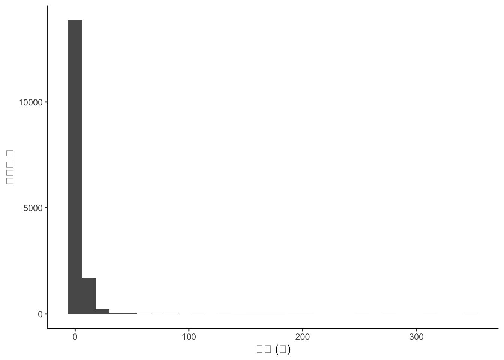
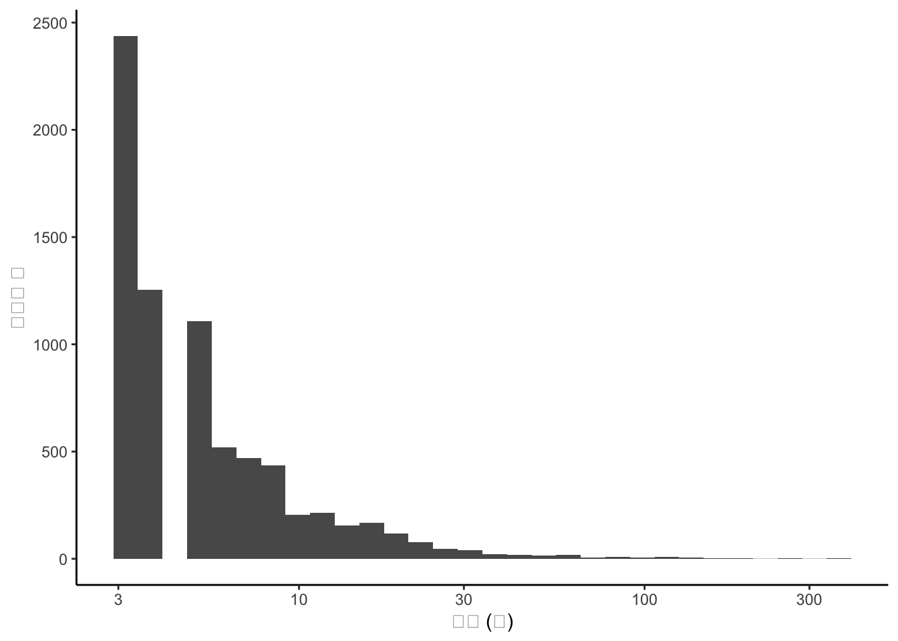
그림 fig-delayhist-1의 거의 비어 있는 그래프는 이상치의 존재를 시사합니다. 무엇이 진행되고 있는지 이해하려고 노력하는 다양한 방법이 있지만, 한 가지 빠른 방법은 로그를 사용하는 것입니다. 0 값은 사라질 것으로 예상된다는 점을 기억하십시오(그림 fig-delayhist-2).
이 초기 탐색은 우리가 더 탐색하고 싶은 소수의 큰 지연이 있음을 시사합니다. 무슨 일이 일어나고 있는지 이해하기 위해 이 데이터셋을 “delay_codes”와 결합할 것입니다.
fix_organization_of_codes <-
rbind(
delay_codes |>
select(sub_rmenu_code, code_description_3) |>
mutate(type = "sub") |>
rename(
code = sub_rmenu_code,
code_desc = code_description_3
),
delay_codes |>
select(srt_rmenu_code, code_description_7) |>
mutate(type = "srt") |>
rename(
code = srt_rmenu_code,
code_desc = code_description_7
)
)
all_2021_ttc_data_no_dupes_with_explanation <-
all_2021_ttc_data_no_dupes |>
mutate(type = if_else(line == "SRT", "srt", "sub")) |>
left_join(
fix_organization_of_codes,
by = c("type", "code")
)
all_2021_ttc_data_no_dupes_with_explanation |>
select(station_clean, code, min_delay, code_desc) |>
arrange(-min_delay)# A tibble: 15,908 × 4
station_clean code min_delay code_desc
<chr> <chr> <dbl> <chr>
1 MUSEUM PUTTP 348 Traction Power Rail Related
2 EGLINTON PUSTC 343 Signals - Track Circuit Problems
3 WOODBINE MUO 312 Miscellaneous Other
4 MCCOWAN PRSL 275 Loop Related Failures
5 SHEPPARD WEST PUTWZ 255 Work Zone Problems - Track
6 ISLINGTON MUPR1 207 Priority One - Train in Contact With Person
7 SHEPPARD WEST MUPR1 191 Priority One - Train in Contact With Person
8 ROYAL SUAP 182 Assault / Patron Involved
9 ROYAL MUPR1 180 Priority One - Train in Contact With Person
10 SHEPPARD MUPR1 171 Priority One - Train in Contact With Person
# ℹ 15,898 more rows여기서 348분 지연은 “견인 전력 레일 관련” 때문이었고, 343분 지연은 “신호 - 선로 회로 문제” 때문이었음을 알 수 있습니다.
우리가 찾고 있는 또 다른 것은 데이터의 다양한 그룹화입니다. 특히 하위 그룹에 소수의 관측치만 포함될 수 있는 경우입니다. 이는 우리의 분석이 그들에게 특히 영향을 받을 수 있기 때문입니다. 이를 수행하는 한 가지 빠른 방법은 관심 있는 변수, 예를 들어 “line”을 색상으로 사용하여 데이터를 그룹화하는 것입니다.
all_2021_ttc_data_no_dupes_with_explanation |>
ggplot() +
geom_histogram(
aes(
x = min_delay,
y = ..density..,
fill = line
),
position = "dodge",
bins = 10
) +
scale_x_log10()
all_2021_ttc_data_no_dupes_with_explanation |>
ggplot() +
geom_histogram(
aes(x = min_delay, fill = line),
position = "dodge",
bins = 10
) +
scale_x_log10()
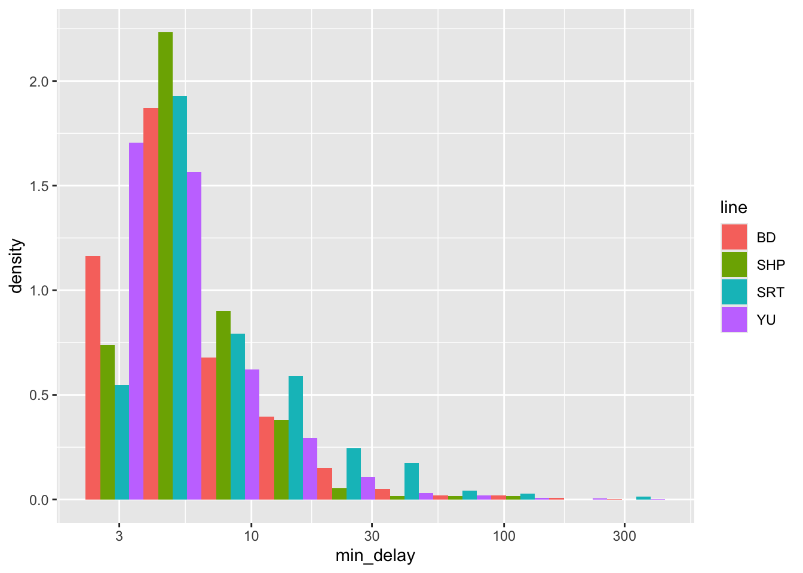
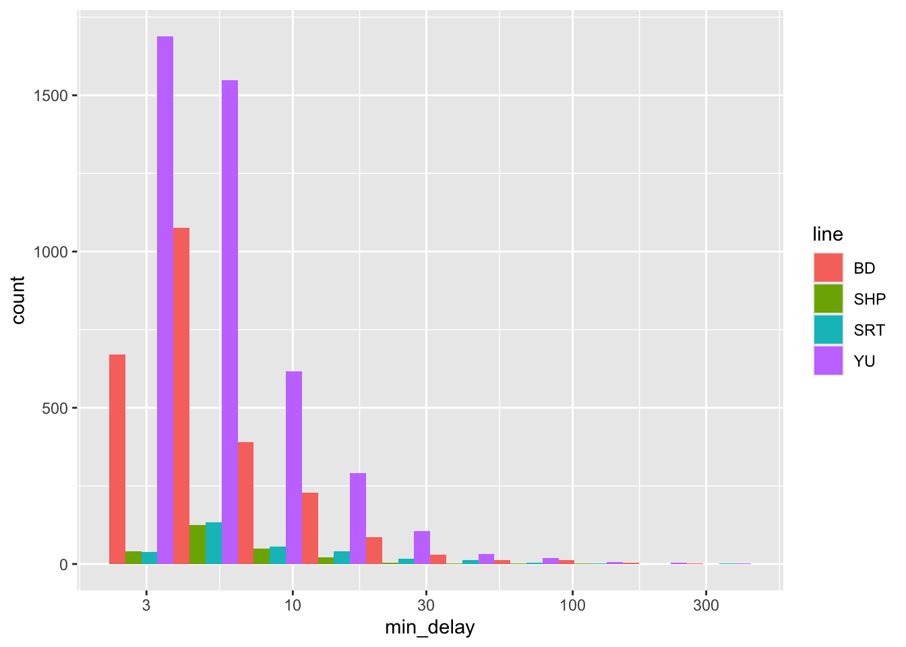
그림 fig-delaydensity-1은 밀도를 사용하여 분포를 더 비교할 수 있도록 하지만, 빈도의 차이도 알아야 합니다(그림 fig-delaydensity-2). 이 경우 “SHP”와 “SRT”는 훨씬 더 작은 개수를 가집니다.
다른 변수로 그룹화하려면 패싯을 추가할 수 있습니다(그림 fig-delayfreqfacet).
all_2021_ttc_data_no_dupes_with_explanation |>
ggplot() +
geom_histogram(
aes(x = min_delay, fill = line),
position = "dodge",
bins = 10
) +
scale_x_log10() +
facet_wrap(vars(day)) +
theme(legend.position = "bottom")
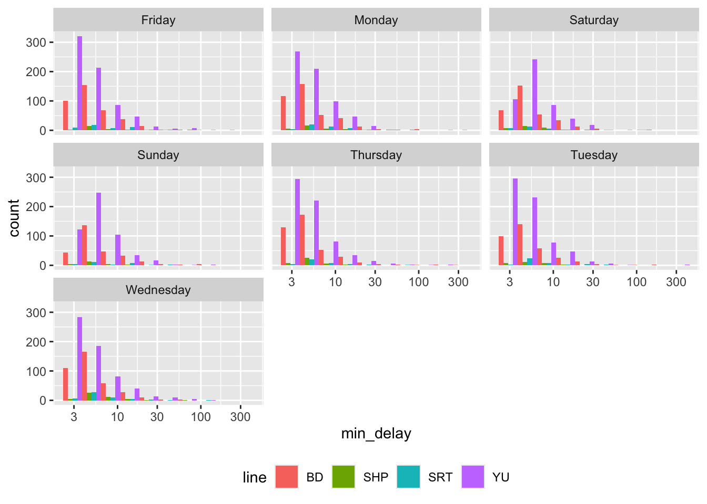
또한 평균 지연 및 노선별 상위 5개 역을 플로팅할 수도 있습니다(그림 fig-whatisthisagraphforants). 이는 “YU”의 “ZONE”이 무엇인지와 같이 후속 조치가 필요한 문제를 제기합니다.
all_2021_ttc_data_no_dupes_with_explanation |>
summarise(mean_delay = mean(min_delay), n_obs = n(),
.by = c(line, station_clean)) |>
filter(n_obs > 1) |>
arrange(line, -mean_delay) |>
slice(1:5, .by = line) |>
ggplot(aes(station_clean, mean_delay)) +
geom_col() +
coord_flip() +
facet_wrap(vars(line), scales = "free_y")
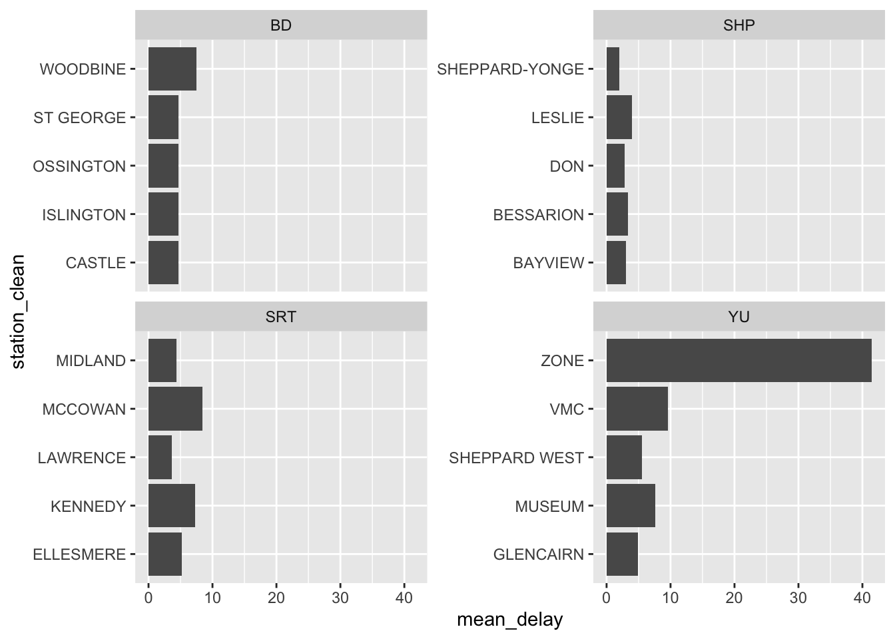
sec-clean-and-prepare에서 논의했듯이, 날짜는 문제가 발생하기 쉽기 때문에 작업하기 어려운 경우가 많습니다. 이러한 이유로 EDA 동안 날짜를 고려하는 것이 특히 중요합니다. 주별로 그래프를 만들어 연간 계절성이 있는지 확인할 수 있습니다. 날짜를 사용할 때 lubridate는 특히 유용합니다. 예를 들어, week()를 사용하여 주를 구성하여 주별 평균 지연(지연된 경우)을 살펴볼 수 있습니다(그림 fig-delaybyweek).
all_2021_ttc_data_no_dupes_with_explanation |>
filter(min_delay > 0) |>
mutate(week = week(date)) |>
summarise(mean_delay = mean(min_delay),
.by = c(week, line)) |>
ggplot(aes(week, mean_delay, color = line)) +
geom_point() +
geom_smooth() +
facet_wrap(vars(line), scales = "free_y")
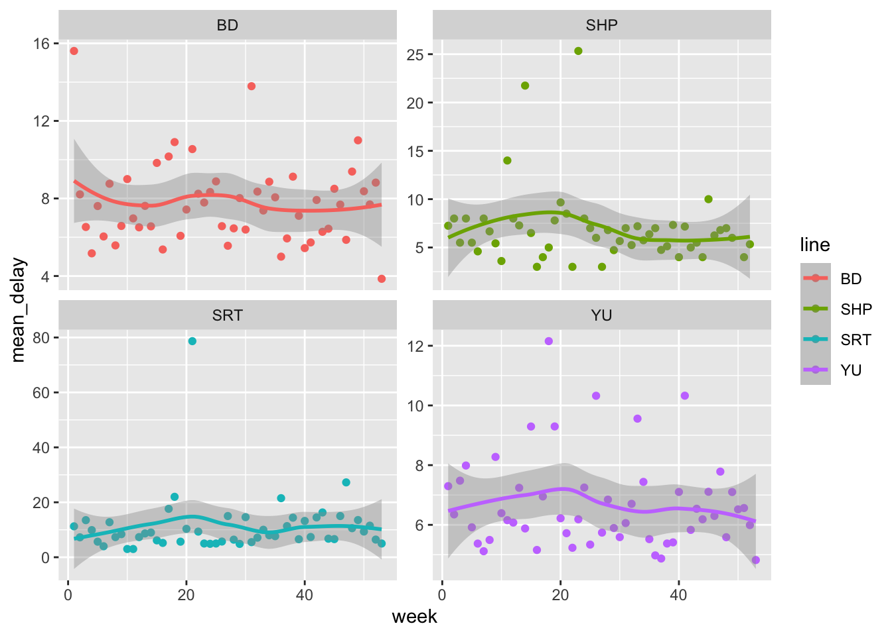
이제 10분 이상 지연된 비율을 살펴보겠습니다(그림 fig-longdelaybyweek).
all_2021_ttc_data_no_dupes_with_explanation |>
mutate(week = week(date)) |>
summarise(prop_delay = sum(min_delay > 10) / n(),
.by = c(week, line)) |>
ggplot(aes(week, prop_delay, color = line)) +
geom_point() +
geom_smooth() +
facet_wrap(vars(line), scales = "free_y")
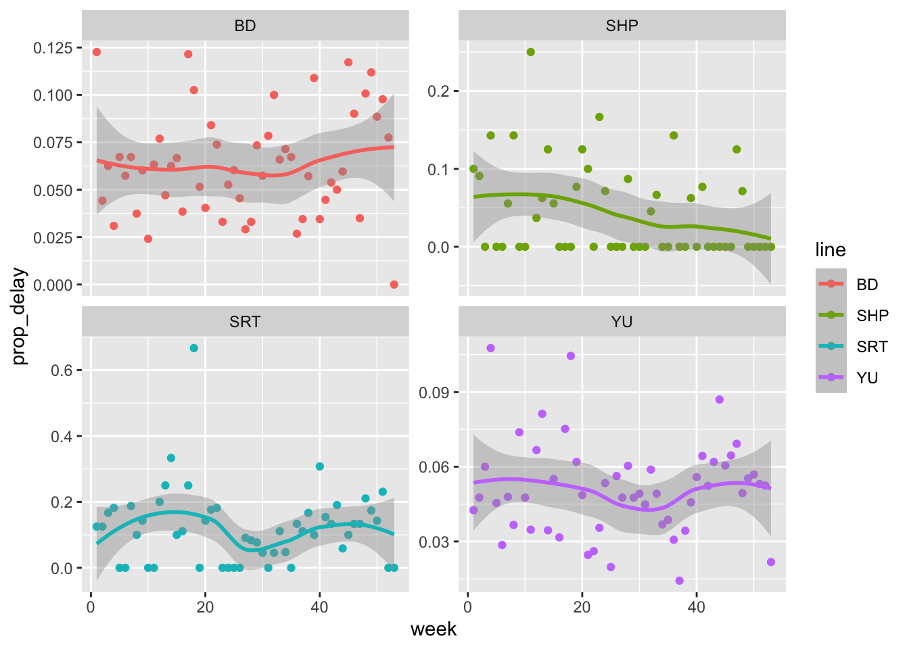
이러한 그림, 표 및 분석은 최종 논문에 포함되지 않을 수 있습니다. 대신, 데이터를 편안하게 다룰 수 있도록 해줍니다. 우리는 눈에 띄는 각 측면과 경고 및 함의 또는 다시 돌아올 측면을 기록합니다.
11.4.2 변수 간의 관계
두 변수 간의 관계를 살펴보는 데도 관심이 있습니다. 이를 위해 그래프를 많이 활용할 것입니다. 다양한 상황에 적합한 유형은 sec-static-communication에서 논의되었습니다. 산점도는 연속 변수에 특히 유용하며, 모델링의 좋은 전조입니다. 예를 들어, 지연과 간격(열차 간의 시간) 간의 관계에 관심이 있을 수 있습니다(그림 fig-delayvsgap).
all_2021_ttc_data_no_dupes_with_explanation |>
ggplot(aes(x = min_delay, y = min_gap, alpha = 0.1)) +
geom_point() +
scale_x_log10() +
scale_y_log10()
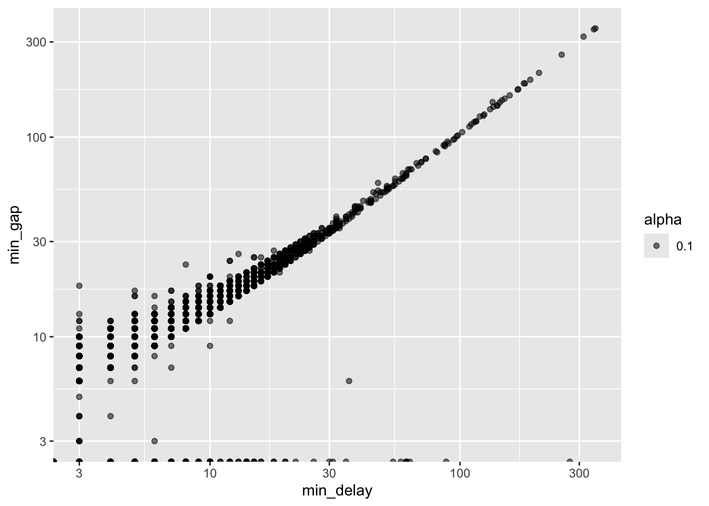
범주형 변수 간의 관계는 더 많은 작업이 필요하지만, 예를 들어 역별 지연 상위 5가지 원인을 살펴볼 수도 있습니다. 그들이 다른지, 그리고 어떤 차이가 어떻게 모델링될 수 있는지에 관심이 있을 수 있습니다(그림 fig-categorical).
all_2021_ttc_data_no_dupes_with_explanation |>
summarise(mean_delay = mean(min_delay),
.by = c(line, code_desc)) |>
arrange(-mean_delay) |>
slice(1:5) |>
ggplot(aes(x = code_desc, y = mean_delay)) +
geom_col() +
facet_wrap(vars(line), scales = "free_y", nrow = 4) +
coord_flip()
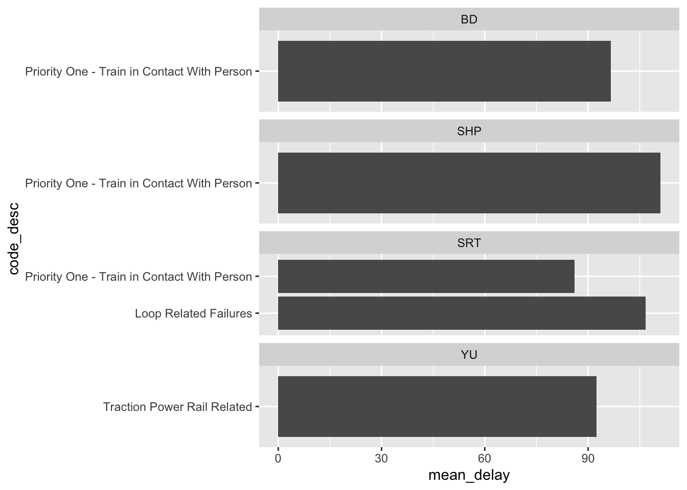
11.5 런던, 영국 에어비앤비 목록
이 사례 연구에서는 2023년 3월 14일 기준 런던, 영국의 에어비앤비 목록을 살펴봅니다. 데이터셋은 Inside Airbnb에서 가져왔으며(Cox 2021), 웹사이트에서 읽어들인 다음 로컬 사본을 저장할 것입니다. read_csv()에 데이터셋이 있는 링크를 제공하면 다운로드됩니다. 이는 출처가 명확하므로 재현성에 도움이 됩니다. 그러나 해당 링크는 언제든지 변경될 수 있으므로 장기적인 재현성과 Inside Airbnb 서버에 미치는 영향을 최소화하기 위해 데이터의 로컬 사본을 저장한 다음 이를 사용해야 합니다.
필요한 데이터셋을 얻으려면 Inside Airbnb \(\rightarrow\) “데이터” \(\rightarrow\) “데이터 가져오기”로 이동한 다음 런던으로 스크롤하십시오. 우리는 “목록 데이터셋”에 관심이 있으며, 오른쪽 클릭하여 필요한 URL을 가져옵니다(그림 fig-getairbnb). Inside Airbnb는 제공하는 데이터를 업데이트하므로 사용 가능한 특정 데이터셋은 시간이 지남에 따라 변경될 것입니다.
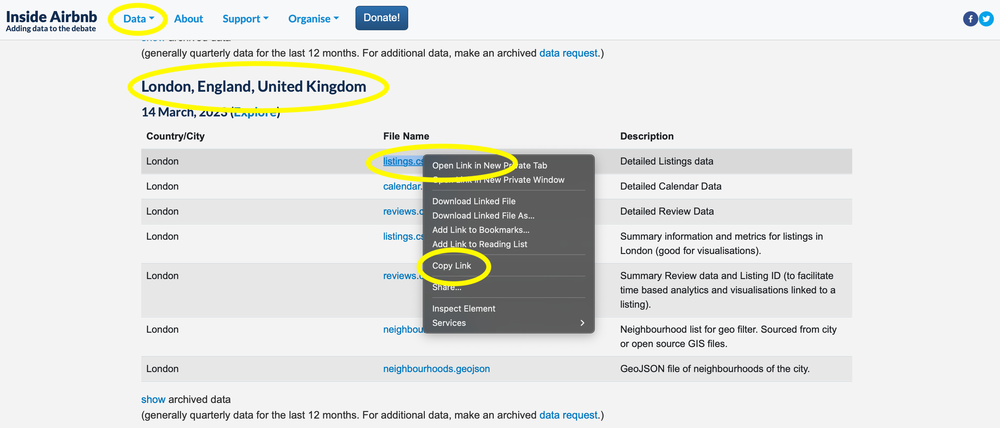
원본 데이터셋은 우리의 것이 아니므로 서면 허가를 받지 않고는 공개해서는 안 됩니다. 예를 들어, 입력 폴더에 추가할 수 있지만, sec-reproducible-workflows에서 다룬 “.gitignore” 항목을 사용하여 GitHub에 푸시하지 않도록 할 수 있습니다. read_csv()의 “guess_max” 옵션은 열 유형을 지정할 필요가 없도록 도와줍니다. 일반적으로 read_csv()는 처음 몇 행을 기반으로 열 유형을 추측합니다. 그러나 때로는 처음 몇 행이 오해의 소지가 있으므로 “guess_max”는 더 많은 행을 살펴보고 무슨 일이 일어나고 있는지 파악하도록 강제합니다. Inside Airbnb에서 복사한 URL을 URL 부분에 붙여넣으십시오. 다운로드되면 로컬 사본을 저장하십시오.
url <-
paste0(
"http://data.insideairbnb.com/united-kingdom/england/",
"london/2023-03-14/data/listings.csv.gz"
)
airbnb_data <-
read_csv(
file = url,
guess_max = 20000
)
write_csv(airbnb_data, "airbnb_data.csv")
airbnb_data스크립트를 실행하여 데이터를 탐색할 때 Inside Airbnb 서버에 매번 데이터를 요청하는 대신 데이터의 로컬 사본을 참조해야 합니다. 실수로 서비스를 과부하하지 않도록 서버 호출을 주석 처리하는 것도 고려할 가치가 있습니다.
다시, 이 파일 이름인 “airbnb_data.csv”를 “.gitignore” 파일에 추가하여 GitHub에 푸시되지 않도록 하십시오. 데이터셋의 크기는 우리가 피하고 싶은 복잡성을 야기할 것입니다.
원본 데이터셋은 우리의 것이 아니므로 보관해야 하지만, 100MB가 넘는 크기이므로 다루기 어렵습니다. 탐색 목적으로 선택된 변수를 사용하여 parquet 파일을 생성할 것입니다(변수 이름을 파악하기 위해 names(airbnb_data)를 사용하여 반복적인 방식으로 수행합니다).
airbnb_data_selected <-
airbnb_data |>
select(
host_id,
host_response_time,
host_is_superhost,
host_total_listings_count,
neighbourhood_cleansed,
bathrooms,
bedrooms,
price,
number_of_reviews,
review_scores_rating,
review_scores_accuracy,
review_scores_value
)
write_parquet(
x = airbnb_data_selected,
sink =
"2023-03-14-london-airbnblistings-select_variables.parquet"
)
rm(airbnb_data)11.5.1 개별 변수의 분포 및 속성
먼저 가격에 관심이 있을 수 있습니다. 현재는 문자이므로 숫자로 변환해야 합니다. 이것은 흔한 문제이며, 모두 NA로 변환되지 않도록 약간 주의해야 합니다. 가격 변수를 강제로 숫자로 만들면 “$”와 같이 숫자와 동등한 것이 불분명한 문자가 많기 때문에 NA로 변환됩니다. 먼저 해당 문자를 제거해야 합니다.
airbnb_data_selected$price |>
head()[1] "$100.00" "$65.00" "$132.00" "$100.00" "$120.00" "$43.00" airbnb_data_selected$price |>
str_split("") |>
unlist() |>
unique() [1] "$" "1" "0" "." "6" "5" "3" "2" "4" "9" "8" "7" ","airbnb_data_selected |>
select(price) |>
filter(str_detect(price, ","))# A tibble: 1,629 × 1
price
<chr>
1 $3,070.00
2 $1,570.00
3 $1,480.00
4 $1,000.00
5 $1,100.00
6 $1,433.00
7 $1,800.00
8 $1,000.00
9 $1,000.00
10 $1,000.00
# ℹ 1,619 more rowsairbnb_data_selected <-
airbnb_data_selected |>
mutate(
price = str_remove_all(price, "[\\$,]"),
price = as.integer(price)
)이제 가격 분포를 살펴볼 수 있습니다(그림 fig-airbnbpricesfirst-1). 이상치가 있으므로 로그 스케일로 고려하고 싶을 수 있습니다(그림 fig-airbnbpricesfirst-2).
airbnb_data_selected |>
ggplot(aes(x = price)) +
geom_histogram(binwidth = 10) +
theme_classic() +
labs(
x = "1박당 가격",
y = "숙소 수"
)
airbnb_data_selected |>
filter(price > 1000) |>
ggplot(aes(x = price)) +
geom_histogram(binwidth = 10) +
theme_classic() +
labs(
x = "1박당 가격",
y = "숙소 수"
) +
scale_y_log10()
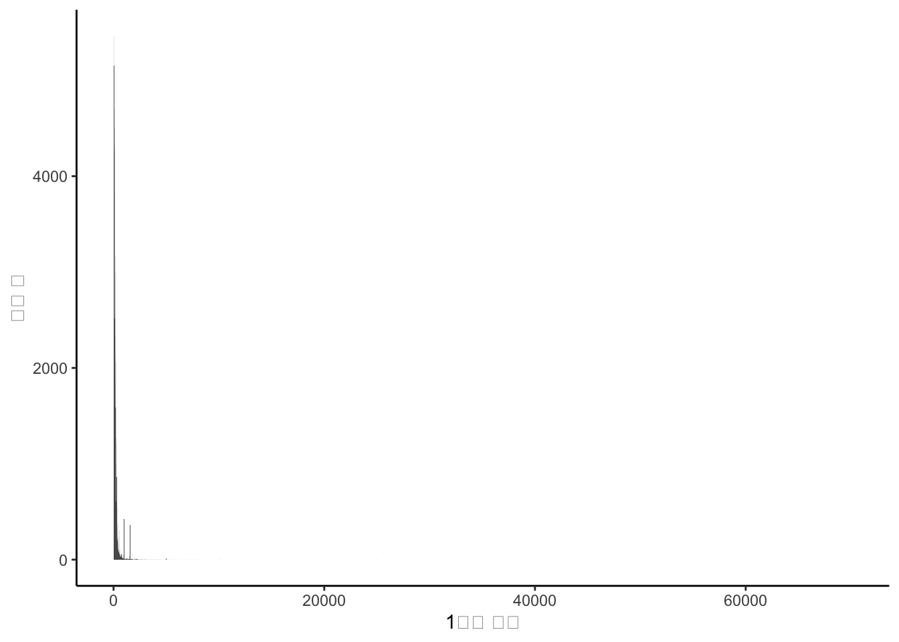
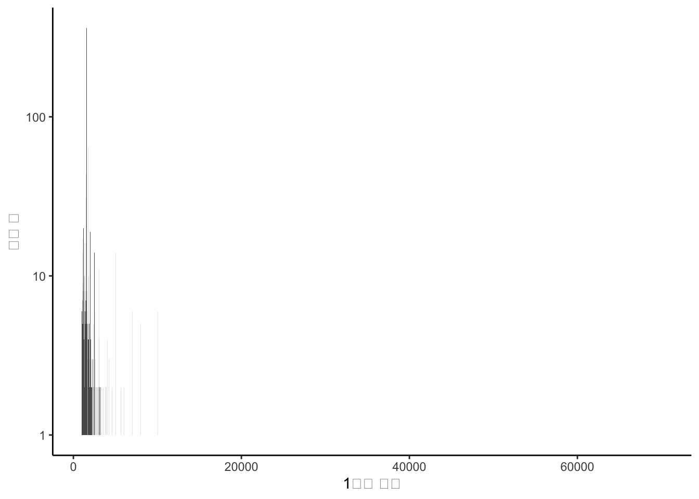
그림 fig-airbnbpricesbunch를 보면, 1,000달러 미만의 가격에 초점을 맞추면 대부분의 숙소가 250달러 미만의 1박당 가격을 가지고 있음을 알 수 있습니다(그림 fig-airbnbpricesbunch-1). sec-clean-and_prepare에서 연령에서 일부 뭉침을 본 것과 마찬가지로, 여기에서도 가격에서 일부 뭉침이 있는 것으로 보입니다. 이는 0 또는 9로 끝나는 숫자 주변에서 발생할 수 있습니다. 관심 있는 가격을 90달러에서 210달러 사이로 확대하고, 빈을 더 작게 변경해 보겠습니다(그림 fig-airbnbpricesbunch-2).
airbnb_data_selected |>
filter(price < 1000) |>
ggplot(aes(x = price)) +
geom_histogram(binwidth = 10) +
theme_classic() +
labs(
x = "1박당 가격",
y = "숙소 수"
)
airbnb_data_selected |>
filter(price > 90) |>
filter(price < 210) |>
ggplot(aes(x = price)) +
geom_histogram(binwidth = 1) +
theme_classic() +
labs(
x = "1박당 가격",
y = "숙소 수"
)
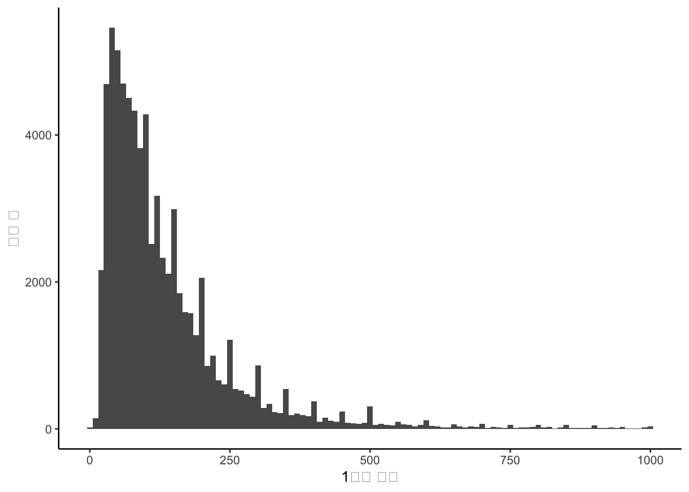
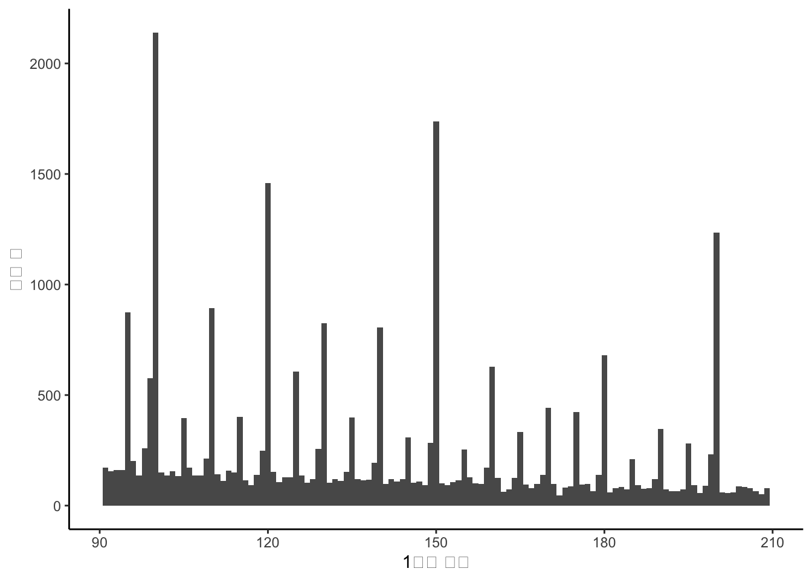
지금은 999달러를 초과하는 모든 가격을 제거할 것입니다.
airbnb_data_less_1000 <-
airbnb_data_selected |>
filter(price < 1000)슈퍼호스트는 특히 경험이 많은 에어비앤비 호스트이며, 우리는 그들에 대해 더 자세히 알고 싶을 수 있습니다. 예를 들어, 호스트는 슈퍼호스트이거나 아니거나 둘 중 하나이므로 NA는 예상하지 않습니다. 그러나 NA가 있음을 알 수 있습니다. 호스트가 목록을 제거했거나 유사한 이유일 수 있지만, 이는 더 자세히 조사해야 할 사항입니다.
airbnb_data_less_1000 |>
filter(is.na(host_is_superhost)) |>
nrow()[1] 13또한 이로부터 이진 변수를 생성하고 싶습니다. 현재는 참/거짓이지만, 모델링에는 괜찮지만, 0/1로 만드는 것이 더 쉬운 몇 가지 상황이 있습니다. 그리고 지금은 슈퍼호스트 여부에 NA가 있는 사람은 모두 제거할 것입니다.
airbnb_data_no_superhost_nas <-
airbnb_data_less_1000 |>
filter(!is.na(host_is_superhost)) |>
mutate(
host_is_superhost_binary =
as.numeric(host_is_superhost)
)에어비앤비에서 게스트는 청결도, 정확성, 가치 등 다양한 측면에서 1점부터 5점까지 별점을 줄 수 있습니다. 그러나 데이터셋의 리뷰를 보면, 사실상 이진이며, 거의 모든 경우에 별점이 5점이거나 아니거나 둘 중 하나임을 알 수 있습니다(그림 fig-airbnbreviews).
airbnb_data_no_superhost_nas |>
ggplot(aes(x = review_scores_rating)) +
geom_bar() +
theme_classic() +
labs(
x = "리뷰 점수",
y = "숙소 수"
)
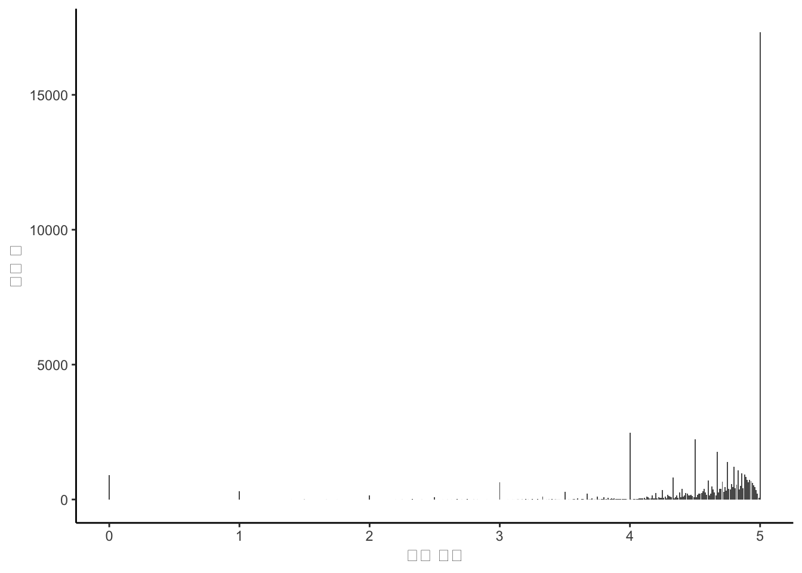
“review_scores_rating”의 NA를 처리하고 싶지만, NA가 많기 때문에 더 복잡합니다. 단순히 리뷰가 없기 때문일 수 있습니다.
airbnb_data_no_superhost_nas |>
filter(is.na(review_scores_rating)) |>
nrow()[1] 17681airbnb_data_no_superhost_nas |>
filter(is.na(review_scores_rating)) |>
select(number_of_reviews) |>
table()number_of_reviews
0
17681 이러한 숙소는 아직 리뷰 점수가 없습니다. 왜냐하면 충분한 리뷰가 없기 때문입니다. 전체의 거의 5분의 1에 달하는 큰 비율이므로 개수를 사용하여 더 자세히 살펴보고 싶을 수 있습니다. 이러한 숙소에서 체계적으로 어떤 일이 일어나고 있는지 확인하고 싶습니다. 예를 들어, NA가 최소 리뷰 수와 같은 어떤 요구 사항에 의해 발생한다면, 모두 결측될 것으로 예상할 것입니다.
한 가지 접근 방식은 결측되지 않은 것과 주요 리뷰 점수에만 초점을 맞추는 것입니다(그림 fig-airbnbreviewsselected).
airbnb_data_no_superhost_nas |>
filter(!is.na(review_scores_rating)) |>
ggplot(aes(x = review_scores_rating)) +
geom_histogram(binwidth = 1) +
theme_classic() +
labs(
x = "평균 리뷰 점수",
y = "숙소 수"
)
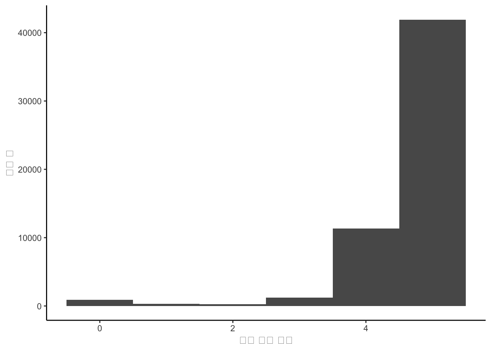
지금은 주요 리뷰 점수에 NA가 있는 사람은 모두 제거할 것입니다. 비록 이렇게 하면 관측치의 약 20%가 제거되지만 말입니다. 이 데이터셋을 실제 분석에 사용하게 된다면, 부록 등에서 이 결정을 정당화해야 할 것입니다.
airbnb_data_has_reviews <-
airbnb_data_no_superhost_nas |>
filter(!is.na(review_scores_rating))또 다른 중요한 요소는 호스트가 문의에 얼마나 빨리 응답하는지입니다. 에어비앤비는 호스트에게 최대 24시간 이내에 응답하도록 허용하지만, 1시간 이내에 응답하도록 권장합니다.
airbnb_data_has_reviews |>
count(host_response_time)# A tibble: 5 × 2
host_response_time n
<chr> <int>
1 N/A 19479
2 a few days or more 712
3 within a day 4512
4 within a few hours 6894
5 within an hour 24321호스트가 응답 시간이 NA인 경우는 불분명합니다. 다른 변수와 관련이 있을 수 있습니다. 흥미롭게도 “host_response_time” 변수의 “NA”는 실제 NA로 코딩되지 않고 다른 범주로 처리되는 것 같습니다. 실제 NA로 다시 코딩하고 변수를 요인으로 변경할 것입니다.
airbnb_data_has_reviews <-
airbnb_data_has_reviews |>
mutate(
host_response_time = if_else(
host_response_time == "N/A",
NA_character_,
host_response_time
),
host_response_time = factor(host_response_time)
)NA에 문제가 있습니다. NA가 많기 때문입니다. 예를 들어, 리뷰 점수와 관계가 있는지 확인하고 싶을 수 있습니다(그림 fig-airbnbreviewsselectednasresponse). 전체 리뷰가 100인 경우가 많습니다.
airbnb_data_has_reviews |>
filter(is.na(host_response_time)) |>
ggplot(aes(x = review_scores_rating)) +
geom_histogram(binwidth = 1) +
theme_classic() +
labs(
x = "평균 리뷰 점수",
y = "숙소 수"
)
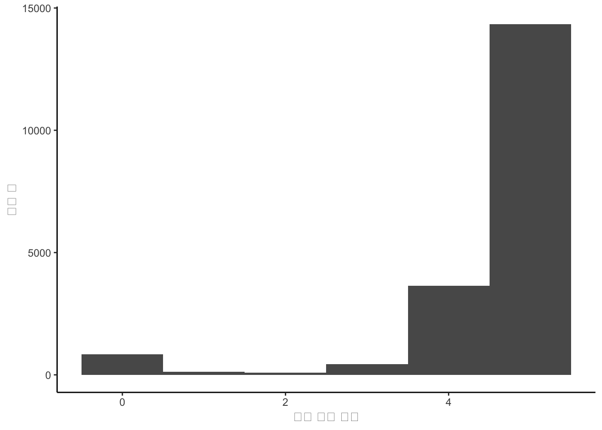
일반적으로 결측값은 ggplot2에 의해 제거됩니다. naniar의 geom_miss_point()를 사용하여 그래프에 포함할 수 있습니다(그림 fig-visualisemissing).
airbnb_data_has_reviews |>
ggplot(aes(
x = host_response_time,
y = review_scores_accuracy
)) +
geom_miss_point() +
labs(
x = "호스트 응답 시간",
y = "리뷰 점수 정확도",
color = "결측값입니까?"
) +
theme(axis.text.x = element_text(angle = 90, vjust = 0.5, hjust=1))
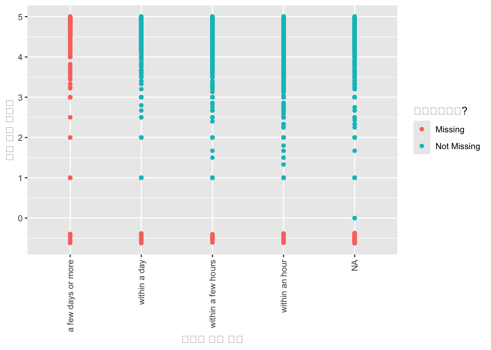
지금은 응답 시간에 NA가 있는 사람은 모두 제거할 것입니다. 이렇게 하면 다시 관측치의 약 20%가 제거됩니다.
airbnb_data_selected <-
airbnb_data_has_reviews |>
filter(!is.na(host_response_time))호스트가 에어비앤비에 얼마나 많은 숙소를 가지고 있는지 관심이 있을 수 있습니다(그림 fig-airbnbhostlisting).
airbnb_data_selected |>
ggplot(aes(x = host_total_listings_count)) +
geom_histogram() +
scale_x_log10() +
labs(
x = "호스트별 총 목록 수",
y = "호스트 수"
)
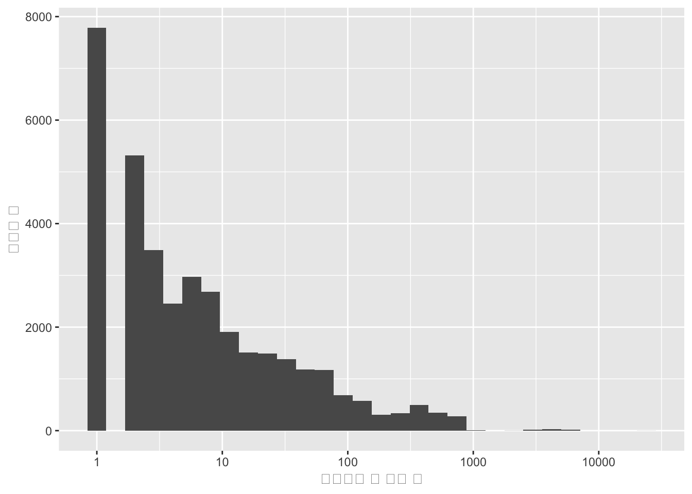
그림 fig-airbnbhostlisting을 보면 2-500개 범위의 숙소를 가진 호스트가 많고, 일반적인 긴 꼬리가 있음을 알 수 있습니다. 그렇게 많은 목록을 가진 호스트의 수는 예상치 못했으며 후속 조치가 필요합니다. 그리고 NA가 있는 호스트도 많으므로 처리해야 합니다.
airbnb_data_selected |>
filter(host_total_listings_count >= 500) |>
head()# A tibble: 6 × 13
host_id host_response_time host_is_superhost host_total_listings_count
<dbl> <fct> <lgl> <dbl>
1 439074505 within an hour FALSE 3627
2 156158778 within an hour FALSE 558
3 156158778 within an hour FALSE 558
4 156158778 within an hour FALSE 558
5 156158778 within an hour FALSE 558
6 156158778 within an hour FALSE 558
# ℹ 9 more variables: neighbourhood_cleansed <chr>, bathrooms <lgl>,
# bedrooms <dbl>, price <int>, number_of_reviews <dbl>,
# review_scores_rating <dbl>, review_scores_accuracy <dbl>,
# review_scores_value <dbl>, host_is_superhost_binary <dbl>10개 이상의 목록을 가진 사람들에 대해 즉시 이상한 점은 없지만, 동시에 여전히 명확하지 않습니다. 지금은 간단하게 한 숙소만 가진 사람들에게 초점을 맞출 것입니다.
airbnb_data_selected <-
airbnb_data_selected |>
add_count(host_id) |>
filter(n == 1) |>
select(-n)11.5.2 변수 간의 관계
변수 간에 어떤 관계가 있는지 확인하기 위해 그래프를 만들고 싶을 수 있습니다. 떠오르는 몇 가지 측면은 가격을 살펴보고 리뷰, 슈퍼호스트, 숙소 수 및 이웃과 비교하는 것입니다.
리뷰가 1개 이상인 숙소에 대해 가격과 리뷰, 그리고 슈퍼호스트 여부 간의 관계를 살펴볼 수 있습니다(그림 fig-priceandreview).
airbnb_data_selected |>
filter(number_of_reviews > 1) |>
ggplot(aes(x = price, y = review_scores_rating,
color = host_is_superhost)) +
geom_point(size = 1, alpha = 0.1) +
theme_classic() +
labs(
x = "1박당 가격",
y = "평균 리뷰 점수",
color = "슈퍼호스트"
) +
scale_color_brewer(palette = "Set1")
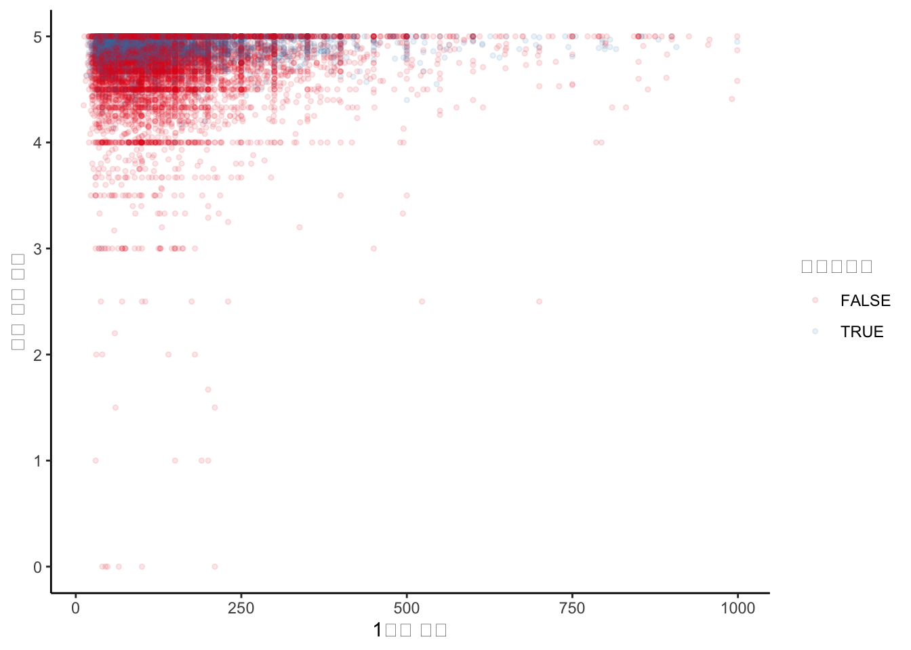
슈퍼호스트가 되는 요인 중 하나는 문의에 얼마나 빨리 응답하는지입니다. 슈퍼호스트는 문의에 빨리 예 또는 아니오라고 말하는 것을 포함한다고 상상할 수 있습니다. 데이터를 살펴보겠습니다. 먼저, 응답 시간별 슈퍼호스트의 가능한 값을 살펴보고 싶습니다.
airbnb_data_selected |>
count(host_is_superhost) |>
mutate(
proportion = n / sum(n),
proportion = round(proportion, digits = 2)
)# A tibble: 2 × 3
host_is_superhost n proportion
<lgl> <int> <dbl>
1 FALSE 10480 0.74
2 TRUE 3672 0.26다행히도 리뷰 행을 제거했을 때 슈퍼호스트 여부에 대한 NA가 제거된 것 같지만, 다시 살펴보면 다시 확인해야 할 수도 있습니다. janitor의 tabyl()을 사용하여 호스트의 응답 시간과 슈퍼호스트 여부를 나타내는 표를 만들 수 있습니다. 호스트가 1시간 이내에 응답하지 않으면 슈퍼호스트가 아닐 가능성이 높다는 것이 분명합니다.
airbnb_data_selected |>
tabyl(host_response_time, host_is_superhost) |>
adorn_percentages("col") |>
adorn_pct_formatting(digits = 0) |>
adorn_ns() |>
adorn_title() host_is_superhost
host_response_time FALSE TRUE
a few days or more 5% (489) 0% (8)
within a day 22% (2,322) 11% (399)
within a few hours 23% (2,440) 25% (928)
within an hour 50% (5,229) 64% (2,337)마지막으로, 이웃을 살펴볼 수 있습니다. 데이터 제공자가 이웃 변수를 정리하려고 시도했으므로 지금은 해당 변수를 사용할 것입니다. 그러나 실제 분석에 이 변수를 사용하게 된다면 어떻게 구성되었는지 조사해야 할 것입니다.
airbnb_data_selected |>
tabyl(neighbourhood_cleansed) |>
adorn_pct_formatting() |>
arrange(-n) |>
filter(n > 100) |>
adorn_totals("row") |>
head() neighbourhood_cleansed n percent
Hackney 1172 8.3%
Westminster 965 6.8%
Tower Hamlets 956 6.8%
Southwark 939 6.6%
Lambeth 914 6.5%
Wandsworth 824 5.8%데이터셋에 모델을 빠르게 실행할 것입니다. sec-its-just-a-linear-model에서 모델링에 대해 더 자세히 다룰 것이지만, EDA 동안 모델을 사용하여 데이터셋의 여러 변수 간에 존재할 수 있는 관계를 더 잘 파악할 수 있습니다. 예를 들어, 누군가가 슈퍼호스트인지 여부를 예측할 수 있는지, 그리고 그것을 설명하는 요인이 무엇인지 확인하고 싶을 수 있습니다. 결과가 이진이므로 로지스틱 회귀를 사용하기에 좋은 기회입니다. 슈퍼호스트 상태는 더 빠른 응답과 더 나은 리뷰와 관련이 있을 것으로 예상합니다. 구체적으로, 우리가 추정하는 모델은 다음과 같습니다.
\[\mbox{Prob(슈퍼호스트}=1) = \mbox{logit}^{-1}\left( \beta_0 + \beta_1 \mbox{응답 시간} + \beta_2 \mbox{리뷰} + \epsilon\right)\]
glm을 사용하여 모델을 추정합니다.
logistic_reg_superhost_response_review <-
glm(
host_is_superhost ~
host_response_time +
review_scores_rating,
data = airbnb_data_selected,
family = binomial
)modelsummary를 설치하고 로드한 후 modelsummary()를 사용하여 결과를 빠르게 살펴볼 수 있습니다(표 tbl-modelsummarylogisticregressionsuper).
modelsummary(logistic_reg_superhost_response_review)| (1) | |
|---|---|
| (Intercept) | -16.369 |
| (0.673) | |
| host_response_timewithin a day | 2.230 |
| (0.361) | |
| host_response_timewithin a few hours | 3.035 |
| (0.359) | |
| host_response_timewithin an hour | 3.279 |
| (0.358) | |
| review_scores_rating | 2.545 |
| (0.116) | |
| Num.Obs. | 14152 |
| AIC | 14948.4 |
| BIC | 14986.2 |
| Log.Lik. | -7469.197 |
| F | 197.407 |
| RMSE | 0.42 |
각 수준이 슈퍼호스트가 될 확률과 양의 상관 관계가 있음을 알 수 있습니다. 그러나 1시간 이내에 응답하는 호스트는 데이터셋에서 슈퍼호스트인 개인과 관련이 있습니다.
이 분석 데이터셋을 저장할 것입니다.
write_parquet(
x = airbnb_data_selected,
sink = "2023-05-05-london-airbnblistings-analysis_dataset.parquet"
)11.6 결론
이 장에서는 탐색적 데이터 분석(EDA)을 다루었습니다. 이는 데이터셋을 알아가는 적극적인 과정입니다. 우리는 결측 데이터, 변수의 분포, 변수 간의 관계에 초점을 맞추었습니다. 그리고 이를 위해 그래프와 표를 광범위하게 사용했습니다.
EDA에 대한 접근 방식은 맥락과 데이터셋에서 발생하는 문제 및 특징에 따라 달라질 것입니다. 또한 기술에 따라 달라질 것입니다. 예를 들어, 회귀 모델 및 차원 축소 접근 방식을 고려하는 것이 일반적입니다.
11.7 연습 문제
연습
- (계획) 다음 시나리오를 고려하십시오: 소셜 미디어 회사에서 연령에 대한 데이터를 가지고 있으며, 이 플랫폼에는 미국 인구의 약 80%가 있습니다. 데이터셋이 어떻게 생겼을지 스케치한 다음, 모든 관측치를 보여주기 위해 만들 수 있는 그래프를 스케치하십시오.
- (시뮬레이션) 설명된 시나리오를 더 고려하고 상황을 시뮬레이션하십시오. 크기 때문에 parquet을 사용하십시오. 시뮬레이션된 데이터를 기반으로 10개의 테스트를 포함하십시오. 코드가 포함된 GitHub Gist 링크를 제출하십시오.
- (수집) 그러한 데이터셋의 가능한 출처를 설명하십시오.
- (탐색)
ggplot2를 사용하여 스케치한 그래프를 만드십시오. 코드가 포함된 GitHub Gist 링크를 제출하십시오. - (소통) 자신이 한 일에 대해 한 페이지를 작성하고, 표본을 기반으로 한 추정치에 대한 위협 중 일부를 신중하게 논의하십시오.
퀴즈
- (tukey1962future를?) 몇 단락으로 요약한 다음 데이터 과학과 관련시키십시오.
- 자신의 말로 탐색적 데이터 분석이란 무엇입니까 (최소 세 단락을 작성하고 인용 및 예시를 포함하십시오)?
- “my_data”라는 데이터셋이 있고, “first_col”과 “second_col”이라는 두 개의 열이 있다고 가정해 보십시오. 그래프를 생성하는 R 코드를 작성하십시오(그래프 유형은 중요하지 않습니다). 코드가 포함된 GitHub Gist 링크를 제출하십시오.
- 500개의 관측치와 3개의 변수가 있는 데이터셋이 있다고 가정해 보십시오. 즉, 1,500개의 셀이 있습니다. 행 중 100개가 열 중 하나 이상에 대해 셀이 누락된 경우, 다음 중 무엇을 하시겠습니까? a) 데이터셋에서 전체 행을 제거하시겠습니까? b) 데이터를 있는 그대로 분석하시겠습니까? c) 다른 절차를 사용하시겠습니까? 데이터셋이 10,000개의 행을 가지고 있지만, 동일한 수의 결측 행을 가지고 있다면 어떨까요? 최소 세 단락으로 예시와 인용을 포함하여 논의하십시오.
- 특이한 값을 식별하는 세 가지 방법을 논의하고, 각각에 대해 최소 한 단락을 작성하십시오.
- 범주형 변수와 연속형 변수의 차이점은 무엇입니까?
- 요인 변수와 정수 변수의 차이점은 무엇입니까?
- 데이터셋에서 체계적으로 배제되는 사람들을 어떻게 생각할 수 있습니까?
opendatatoronto를 사용하여 2014년 시장 선거 기부금 데이터를 다운로드하십시오. (참고:get_resource()에서 얻을 2014년 파일에는 많은 시트가 포함되어 있으므로 시장 선거와 관련된 시트만 유지하십시오.)- 데이터 형식을 정리하십시오(파싱 문제 수정 및
janitor를 사용하여 열 이름 표준화). - 데이터셋의 변수를 요약하십시오. 결측값이 있습니까? 있다면 걱정해야 합니까? 모든 변수가 올바른 형식입니까? 그렇지 않다면 올바른 형식의 새 변수를 만드십시오.
- 기부금 값의 분포를 시각적으로 탐색하십시오. 어떤 기부금이 눈에 띄는 이상치입니까? 그들은 유사한 특성을 공유합니까? 대부분의 데이터를 더 잘 파악하기 위해 이러한 이상치를 제외한 기부금 분포를 플로팅하는 것이 유용할 수 있습니다.
- 다음 각 범주에서 상위 5명의 후보자를 나열하십시오: 1) 총 기부금; 2) 평균 기부금; 그리고 3) 기부금 수.
- 해당 프로세스를 반복하되, 후보자 자신의 기부금은 제외하십시오.
- 두 명 이상의 후보자에게 돈을 기부한 기부자는 몇 명입니까?
- 데이터 형식을 정리하십시오(파싱 문제 수정 및
ggplot()에서 막대가 있는 그래프를 생성하는 세 가지geom을 나열하십시오.- 10,000개의 관측치와 27개의 변수가 있는 데이터셋을 고려하십시오. 각 관측치에는 최소 하나의 결측 변수가 있습니다. 무슨 일이 일어나고 있는지 이해하기 위해 취할 단계를 한두 단락으로 논의하십시오.
- 알려진 결측 데이터는 데이터셋에 구멍을 남기는 데이터입니다. 그러나 수집되지 않은 데이터는 어떻습니까? (mcclelland2019lock과?) (luscombe2020policing을?) 살펴보십시오. 그들이 데이터셋을 어떻게 수집했고, 이를 구성하는 데 무엇이 필요했는지 조사하십시오. 데이터셋에 무엇이 있고 왜 있습니까? 무엇이 결측되었고 왜 결측되었습니까? 이것이 결과에 어떻게 영향을 미칠 수 있습니까? 유사한 편향이 사용했거나 읽은 다른 데이터셋에 어떻게 들어갈 수 있습니까?
수업 활동
- 다음 파일 이름을 수정하십시오.
example_project/
├── .gitignore
├── Example project.Rproj
├── scripts
│ ├── simulate data.R
│ ├── DownloadData.R
│ ├── data-cleaning.R
│ ├── test(new)data.R- sec-static-communication에서 소개된 Anscombe의 콰르텟을 고려하십시오. 특정 관측치를 무작위로 제거할 것입니다. 결측 데이터가 있는 데이터셋을 받았다고 가정해 보십시오. sec-farm-data 및 sec-exploratory-data-analysis에서 결측 데이터를 처리하는 접근 방식 중 하나를 선택한 다음, 선택한 것을 구현하는 코드를 작성하십시오. 다음을 비교하십시오.
- 실제 관측치와 결과;
- 실제 요약 통계와 요약 통계; 그리고
- 결측 데이터와 실제 데이터를 하나의 그래프에 보여주는 그래프를 만드십시오.
set.seed(853)
tidy_anscombe <-
anscombe |>
pivot_longer(everything(),
names_to = c(".value", "set"),
names_pattern = "(.)(.)")
tidy_anscombe_MCAR <-
tidy_anscombe |>
mutate(row_number = row_number()) |>
mutate(
x = if_else(row_number %in% sample(
x = 1:nrow(tidy_anscombe), size = 10
), NA_real_, x),
y = if_else(row_number %in% sample(
x = 1:nrow(tidy_anscombe), size = 10
), NA_real_, y)
) |>
select(-row_number)
tidy_anscombe_MCAR# A tibble: 44 × 3
set x y
<chr> <dbl> <dbl>
1 1 10 8.04
2 2 10 9.14
3 3 NA NA
4 4 8 NA
5 1 8 6.95
6 2 8 8.14
7 3 8 6.77
8 4 8 5.76
9 1 NA 7.58
10 2 13 8.74
# ℹ 34 more rows# 여기에 코드 추가- 다음 데이터셋으로 연습을 다시 수행하십시오. 이 경우 주요 차이점은 무엇입까?
tidy_anscombe_MNAR <-
tidy_anscombe |>
arrange(desc(x)) |>
mutate(
ordered_x_rows = 1:nrow(tidy_anscombe),
x = if_else(ordered_x_rows %in% 1:10, NA_real_, x)
) |>
select(-ordered_x_rows) |>
arrange(desc(y)) |>
mutate(
ordered_y_rows = 1:nrow(tidy_anscombe),
y = if_else(ordered_y_rows %in% 1:10, NA_real_, y)
) |>
arrange(set) |>
select(-ordered_y_rows)
tidy_anscombe_MNAR# A tibble: 44 × 3
set x y
<chr> <dbl> <dbl>
1 1 NA NA
2 1 NA NA
3 1 9 NA
4 1 11 8.33
5 1 10 8.04
6 1 NA 7.58
7 1 6 7.24
8 1 8 6.95
9 1 5 5.68
10 1 7 4.82
# ℹ 34 more rows# 여기에 코드 추가- 페어 프로그래밍(5분마다 교대)을 사용하여 새 R 프로젝트를 만든 다음, (Bombieri2023의?) 다음 데이터셋을 읽어들이고 Quarto 문서에 코드와 메모를 추가하여 탐색하십시오.
download.file(url = "https://doi.org/10.1371/journal.pbio.3001946.s005",
destfile = "data.xlsx")
data <-
read_xlsx(path = "data.xlsx",
col_types = "text") |>
clean_names() |>
mutate(date = convert_to_date(date))- 다른 학생과 짝을 이루어 데이터 과학자 역할을 수행하십시오. 파트너는 주제와 질문을 선택할 수 있으며, 당신은 잘 모르지만 그들은 잘 아는 것이어야 합니다(예: 국제 학생이라면 그들의 나라에 대한 것). 그들과 협력하여 분석 계획을 개발하고, 데이터를 시뮬레이션하고, 사용할 수 있는 그래프를 만들어야 합니다.
과제
다음 옵션 중 하나를 선택하십시오. Quarto를 사용하고, 적절한 제목, 저자, 날짜, GitHub 리포지토리 링크 및 인용을 포함하십시오. PDF를 제출하십시오.
옵션 1:
미국 주 및 인구에 대해 수행된 결측 데이터 연습을 palmerpenguins에서 사용 가능한 penguins() 데이터셋의 “bill_length_mm” 변수에 대해 반복하십시오. 대체된 값과 실제 값을 비교하십시오.
자신이 한 일과 발견한 내용에 대해 최소 두 페이지를 작성하십시오.
그 후, 다른 학생과 짝을 이루어 작성한 작업을 교환하십시오. 그들의 피드백을 바탕으로 업데이트하고, 논문에 그들의 이름을 명시하여 인정하십시오.
옵션 2:
파리에 대한 에어비앤비 EDA를 수행하십시오.
옵션 3:
“결측 데이터란 무엇이며 어떻게 처리해야 하는가?”라는 주제에 대해 최소 두 페이지를 작성하십시오.
그 후, 다른 학생과 짝을 이루어 작성한 작업을 교환하십시오. 그들의 피드백을 바탕으로 업데이트하고, 논문에 그들의 이름을 명시하여 인정하십시오.
Arel-Bundock, Vincent. 2022. “modelsummary: Data and Model Summaries in R”. Journal of Statistical Software 103 (1): 1–23. https://doi.org/10.18637/jss.v103.i01.
———. 2024. tinytable: Simple and Configurable Tables in “HTML”, “LaTeX”, “Markdown”, “Word”, “PNG”, “PDF”, and “Typst” Formats. https://vincentarelbundock.github.io/tinytable/.
Cox, Murray. 2021. “Inside Airbnb—Toronto Data”. http://insideairbnb.com/get-the-data.html.
Firke, Sam. 2023. janitor: Simple Tools for Examining and Cleaning Dirty Data. https://CRAN.R-project.org/package=janitor.
Gelfand, Sharla. 2022. opendatatoronto: Access the City of Toronto Open Data Portal. https://CRAN.R-project.org/package=opendatatoronto.
Gelman, Andrew, 와/과 Jennifer Hill. 2007. Data Analysis Using Regression and Multilevel/Hierarchical Models. 1st ed. Cambridge University Press.
Gelman, Andrew, Jennifer Hill, 와/과 Aki Vehtari. 2020. Regression and Other Stories. Cambridge University Press. https://avehtari.github.io/ROS-Examples/.
Grolemund, Garrett, 와/과 Hadley Wickham. 2011. “Dates and Times Made Easy with lubridate”. Journal of Statistical Software 40 (3): 1–25. https://doi.org/10.18637/jss.v040.i03.
Horton, Nicholas, 와/과 Stuart Lipsitz. 2001. “Multiple Imputation in Practice”. The American Statistician 55 (3): 244–54. https://doi.org/10.1198/000313001317098266.
Manski, Charles. 2022. “Inference with Imputed Data: The Allure of Making Stuff Up”. arXiv. https://doi.org/10.48550/arXiv.2205.07388.
Osborne, Jason. 2012. Best Practices in Data Cleaning: A Complete Guide to Everything You Need to Do Before and After Collecting Your Data. SAGE Publications.
R Core Team. 2024. R: A Language and Environment for Statistical Computing. Vienna, Austria: R Foundation for Statistical Computing. https://www.R-project.org/.
Richardson, Neal, Ian Cook, Nic Crane, Dewey Dunnington, Romain François, Jonathan Keane, Dragoș Moldovan-Grünfeld, Jeroen Ooms, 와/과 Apache Arrow. 2023. arrow: Integration to Apache Arrow. https://CRAN.R-project.org/package=arrow.
Ryan, Philip. 2015. “Keeping a Lab Notebook”. YouTube, 5월. https://youtu.be/-MAIuaOL64I.
Staniak, Mateusz, 와/과 Przemysław Biecek. 2019. “The Landscape of R Packages for Automated Exploratory Data Analysis”. The R Journal 11 (2): 347–69. https://doi.org/10.32614/RJ-2019-033.
Tierney, Nicholas, Di Cook, Miles McBain, 와/과 Colin Fay. 2021. naniar: Data Structures, Summaries, and Visualisations for Missing Data. https://CRAN.R-project.org/package=naniar.
Tukey, John. 1962. “The future of data analysis”. The annals of mathematical statistics 33 (1): 1–67. https://doi.org/10.1214/aoms/1177704711.
van Buuren, Stef, 와/과 Karin Groothuis-Oudshoorn. 2011. “mice: Multivariate Imputation by Chained Equations in R”. Journal of Statistical Software 45 (3): 1–67. https://doi.org/10.18637/jss.v045.i03.
Wickham, Hadley. 2018. “Whole game”. YouTube, 1월. https://youtu.be/go5Au01Jrvs.
Wickham, Hadley, Mara Averick, Jenny Bryan, Winston Chang, Lucy D’Agostino McGowan, Romain François, Garrett Grolemund, 기타. 2019. “Welcome to the Tidyverse”. Journal of Open Source Software 4 (43): 1686. https://doi.org/10.21105/joss.01686.
Wickham, Hadley, Mine Çetinkaya-Rundel, 와/과 Garrett Grolemund. (2016년) 2023. R for Data Science. 2nd ed. O’Reilly Media. https://r4ds.hadley.nz.